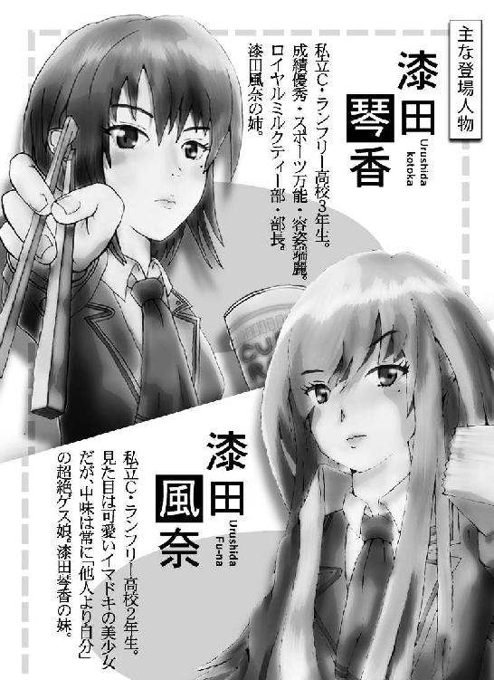
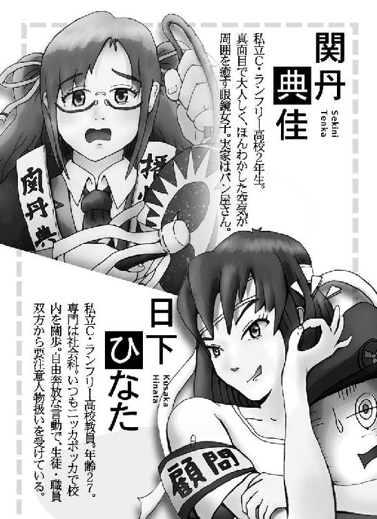
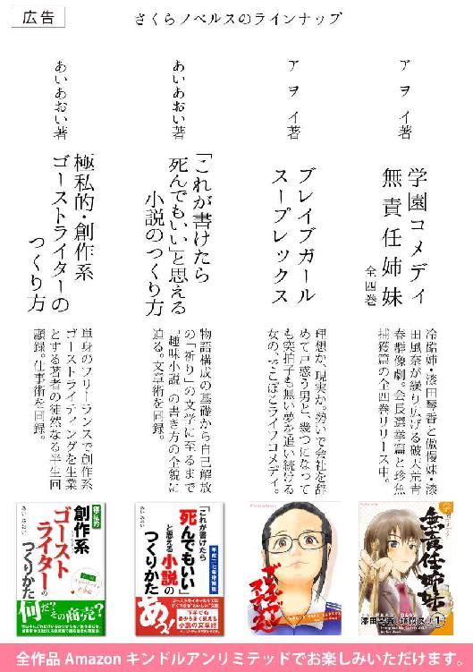

| 学園コメディ無責任姉妹 3: 機械少年の憂鬱 | |
| 小林アヲイ | |
| Sakuranobels (2016) | |
学園コメディ 無責任姉妹 ３
機械少年の憂鬱
―奇譚・鮨とか博奕とか恋慕とか。【前篇】
著者 アヲイ


★その他の登場人物
- ■垂野正太（たるの しょうた）
- 私立Ｃ・ランフリー高校３年生。元々地元のヤンキーだったが更生し、いまや生徒会長を務める学園政治家。生徒会政党「自由学生」の党首。
- ■仙田空也（せんた くうや）
- 私立Ｃ・ランフリー高校３年生。高校デビューをこじらせ「変われる」ことの喜びを布教して回る。洗練アイロン部に所属。同部が母体の生徒会政党「ラ高総連」の書記長。
- ■立河団十郎（たてかわ だんじゅうろう）
- 私立Ｃ・ランフリー高校２年生。現役高校生モデルとして、全校の女子から熱い視線を集める。仙田との縁から洗練アイロン部に所属。
学園コメディ 無責任姉妹 ３
機械少年の憂鬱
―奇譚・鮨とか博奕とか恋慕とか。【前篇】
著者 アヲイ
その１ かれ
――あッ！ ホントだ......！
五時間目の理科室の授業で、首を捻って後ろの様子を見た【関丹典佳】は、その彼が噂通りの佇まいであることに、思わず声を上げそうになった。驚いた拍子に肘が机に当たり、「高校物理Ｂ」の教科書が落ちそうになる。目の端でそれに気付いた典佳は慌てて本を抑えた。
典佳の席はクラスの一番右前。左の最後尾にいる彼はとても小さく見える。その間にはクラスメートの頭がいくつも並んでいて視界を遮るので、彼の表情を詳しく知ることはできない。
だが、彼の姿は確かに【ロボット】だった。
――お、落ち着こ......。
典佳はさかんにまばたきをして前を向いた。鼻からずり落ちそうになる眼鏡を、人差し指でツイと上げる。一番前の席でよそ見をしては、先生に見つかってしまう。理科の先生は【藤田主税】といい、つるつる頭で耳の上にモジャモジャとした白髪がまとわりついている、見たまんまの「おじいちゃん」だった。牛乳瓶の底のような眼鏡の奥にある目は、とても開いているとは思えなかった。だいぶ耄碌しているようだから典佳の動きに気付きはしないだろうが、赤点続きの典佳にはちょっとしたことが綻びになりそうで怖かった。
でも、気になる。ロボット。
典佳はもう一度だけ、おそるおそる後方を振り返った。
――やっぱり......ロボだよ。
彼は確かにロボットだった。
背丈は座っているから分からないが、たぶん普通の男子と変わらない。普通に男子のブレザーを着て、学帽を被っている。学帽？ 授業中に学帽を被っているのはおかしい。そもそも私立Ｃ・ランフリー高等学校の制服に学帽は無かった。確か男女ともベレー帽だったはずだ。彼は他の生徒と同じように椅子に掛け、机に教科書とノートを広げ、前を向いて授業を聞いている。
その向いている顔こそ、彼がモロにロボットであることをまざまざと見せつけている。
頭は円筒形。ちょうど筒状のゴミ入れくらいの大きさ。銀色で、長らく磨かれていないジュラルミンのようにくすんでいる。目は大きく、紙のソーサーみたいな平べったいまん丸が左右に二つ貼りつけられているように見える。その中に大きな黒目があって、それで前を向いていることが分かる。鼻らしいものは無い。口はあるが、あれが口なのかどうか。横一文字に太くて黒い線がビーッと引かれている風にしか見えない。たぶん本来口など無く、顔っぽく見せるために描かれているのだけなのだろう。
――もしかしたら誰かがロボットの被り物をしているのかも？
誰が？ 何のために？ 典佳の頭に、もはやそんな疑問は浮かばなかった。現に彼女の視界の中に、異形の少年が映し出されている。そうだ、あれはきっと被り物だ。
だがそんな彼女の想像は、次の瞬間にかき消された。
じっと授業を受けていたロボットは、黒板の文字をノートに写すべく、右手に鉛筆を持った。彼は鉛筆の先をじっと見つめていたが、次の瞬間、目から音も無く赤い光線を照射し、鉛筆の先から一筋の煙を上げた。
「わッ！」
「こぉれ！ 関丹クン。何を騒いどるか」
藤田先生の声に典佳は思わず立ち上がった。その拍子に椅子がガタンと音を立てて後ろに倒れた。たちまち集まるクラスメートの視線。
「え、あの......何でもありません」
「居眠りして、変な夢でも見とったかね。いかんヨー」
騒めくような嘲笑が典佳を包み込む。先生は軽く手をかざして典佳に座るように促し、後は何事も無かったように授業を続けた。
――あれってきっと、鉛筆を削ったんだよね......！
間違いない、彼はロボットだ。典佳は確信した。
――学校にロボットがいる――。
校内にこの噂が聞こえ始めたのはかれこれ一か月くらい前、
「ねえねえ、理科室での授業の時、後ろに一人いるの知ってる？」
ある女子生徒がこんなことを言ったのが始まりだった。
私立Ｃ・ランフリー高等学校は、中途で誰か退学でもしない限り、一クラス四〇名と決まっていた。理科室の掃除当番になったその女子は、理科室の机椅子がなぜか四十一セットあることに気付いた。気になって授業中に振り返ったところ、その存在が明らかになったのだった。今では多くの生徒が、かの「ロボット少年」を目撃しており、もはや噂と呼ぶには幾分新鮮さを欠きつつあったが、彼の存在についてはまだまだ好奇心を掻き立てられることが多かった。
まず、彼は理科室の授業にしか現れない。どこかのクラスに所属しているとか、他の特別室の授業に出ていることは無い。さらに言えば、理科の藤田先生の授業にだけ姿を見せた。
「ってことは、ドクター・ローデンが造ったロボじゃないの？」
ある男子生徒がそう言った。無論、敢えてそんなことを言わなくても、誰もがすでにそう思っていた。
ドクター・ローデンとは、藤田主税のニックネームである。身の丈は一五〇センチそこそこで、皺くちゃの白衣姿。頭はツルツルで丸眼鏡を掛け、口の中でいつもごにょごにょ言っている様子は、いかにも漫画に出てきそうなマッドサイエンティストだ。彼はその老いた風貌の通り、普通の勤めの教師ならとっくに定年になっていてもおかしくない年齢だった。だがそれでも私立Ｃ・ランフリー高等学校の嘱託として勤め続けているのには、何か特別な理由があるのだろう。元々はどこかの科学アカデミーにいたとかいなかったとか、まことしやかに噂されている。そのいわくありげな様子から、いつしか生徒たちは藤田のことを「ドック」とか「ドクター」と呼ぶようになり、それに藤田の音読みが加わって「ドクター・トーデン」と呼びならわすようになった。これはなかなか本人も気に入っていたようだ。だがある時誰かが誤って「ドクター・ローデン」と呼んで以来、急速にローデンが普及した。本人、これには血圧を最高潮に高めて拒否の構えだった。
「も、漏れてないわい！」
東――いや、トーデンが「漏れてない」ということについては如何様なる誹りも免れないが、このネーミングは本人の意向に反して全校に浸透し、いまや教師の間でも「ローデン」が一般化しているほどだった。
藤田が理科、とりわけ物理の教師であること、過去に何やら闇がありそうなこと、さらに彼の担当する教科・教室にしかあらわれないことから、かのロボット少年が藤田と関係しているという説に異論を挟む者はいなかった。しかし異論も何も、ロボット少年が存在することを特に隠蔽しようとする動きは、学園のどこにも無かった。藤田にも、当のロボット本人にも。
例えば藤田の授業では「グループ実験」といって生徒が四、五人のグループになって実験をすることがあった。そうやって数の少ない実験器具を足らすのである。その時、そのロボット少年も普通に生徒たちに混じって参加しているのだった。
「ええッ？ 嘘でしょ！」
典佳は声を上げた。ある休み時間のことだ。クラスでも指折りのボンヤリ性である典佳は、周囲に随分遅れてその事実を知り、声を裏返して驚いた。この件くらいはクラスの噂話についていけていると思っていたのに......。周囲のクラスメートは、愕然とする典佳を尻目に、かのロボット少年との邂逅に思いを馳せた。
「彼、すごく優しいよね」
「顔もシンプルでかわいいし」
「こないだ鉄のバールをグイって曲げたよ。すごい力だった」
「案外、声高いんだよねー」
「分子の立体模型を組む時の手の動き、早すぎて俺見えなかったよ」
「ああ見えて駄洒落とか言うんだよ。しかも顔赤らめてさ」
「そうそう。その時熱いんだよねー」
ロボット少年と同じ班になったことのある生徒たちの声は、みなこんな調子だった。彼はいい奴だ、すごい能力を持っている、しかも人間らしい性格をしている......。
「ねえ、あ、あのさ」
典佳はおどおどして尋ねた。
「か、彼の名前は、何て言うのかな？ 誰か訊いた人、いる？」
だが、答えは返ってこなかった。いかに好印象とはいえ相手は鉄の塊だ。プライベートに踏み込むのは何となく怖いような気がして、みな聞きそびれていたのである。
そんな中、ただひとり、
「アタシ、最初に『アンタ名前なんての？』って訊いたよ」
大声でそう言ってのける女子がいた。
典佳の前にあらわれたのは、ライトブラウンのストレートヘアを白無垢綿帽子のように大きく丸く膨らませ、耳の後ろに通した色白女子だった。顔立ちはすらりとして独特の華やかさがあるものの、目元にえもいわれぬ不穏な鋭さが漂っている。
彼女は典佳を真っ直ぐ見つめ、ニヤリと笑みを浮かべた。典佳の背筋にゾゾッと悪寒が走った。
「ふ、風奈ちゃん......」
目の前に立つ女子の名は【漆田風奈】といった。典佳とは性格はまるで違うが妙に気が合い、いつも一緒に過ごす仲良しである。けれども風奈はいつだってこのように不穏なオーラを湛えているので、典佳はビクビクしっぱなしだった。無理も無い。彼女の不穏さは単なるムードなどでは無く、一度ことに及べば振舞いは鬼神の如く、周囲を混沌に突き落す。今からちょうど一か月前、生徒会長選挙に絡んでバリケード事件を起こし、いまや学校で知らぬ者の無い要注意女子高生だった。
「......で、彼は、な、何て名乗ったの？」
典佳は近すぎる風奈から数歩後ずさりして尋ねた。
「ええとね」
風奈は小首を傾げ指で顎先をつまみ、ちょっと思い出す仕草をし
「名乗ったんじゃなくて、名前をノートに書いてみせてくれた」
「な、なんか変わってるね」
「確か苗字は『ハラ』だった。原っぱの『ハラ』」
「そっか、原くんって言うんだ。で、下の名前は」
「それが、何て読むのかイマイチ分からなかったんだけど、コドモの『コ』っていう字と『チカラ』って字」
「子力......『コリキ』くんかな？ そっか、彼は『ハラコリキ』くんって言うんだ」
「たぶんね。アタシは漢字を見ただけだから、読み方は分かんないよ」
「あの......でもそれって、苗字と名前をつなげて書くとさ」
「え？」
「まさか、ソレで動いているんじゃないよね？」
「は？ どういうこと？」
「そういえば、彼の動力源って何なんだろ？」
クラスがにわかに騒然とした。風奈はひとり大笑し
「何言ってんの。たかだかあの程度、ゴムかゼンマイに決まってるでしょ」
ハラコリキの動力源について、誰も正確に知る者は無かった。でもまさか風奈の言うようなゴムやゼンマイといった単純なものではあるまいというのが、大筋の意見だった。現に鉄の棒をひん曲げたり、凄まじいスピードでアームを動かしたのを見た者がいる。並大抵のエネルギーではない。
「きっと鉄腕ア〇ムと同じだよ」
「地軸を利用したマグネットなんじゃないか」
「塩で動いてる」
「最近この辺でネコを見かけなくなったね」
だがそれ以上、彼の動力源に好奇心を抱く者は無かった。何故だろう？ 典佳は訝しがった。あまりに発展した現代社会において、もはや人はちょっとやそっとのことでは驚かなくなってしまったのか。ほとんど天意とも言うべき典佳のボンヤリを以ってしなければ、この怪異を怪異と感じることすらできなくなってしまったのか。
――よしッ！ ここは私が自分で訊いてみせる！
その日の放課後、典佳は勇気を振り絞り、理科室へ向かった。彼女は藤田に直接会い、自らの口でハラコリキに関する全ての疑問を問いただそうと決心したのだ。
もっともその決心の背後には、クラスの噂話に出遅れた自らへの叱咤と、クラスメートからのささやかな視線欲しさもあった。
「し、失礼します！」
典佳は勢いよく理科室の扉を開けた。藤田は教壇の辺りに立って実験器具の片付けをしているところだった。彼は反射的に顔を向け
「ああ、関丹クンかね」
全く無感動にそう言った。
「ロ、ローデン先生に伺います！」
「こりゃ。漏れてはおらんといつも言っとるだろうが！」
「す、すみませんっ」
出だしからしくじった。典佳はガバッと頭を下げた。
「全く......何の用じゃ」
「せ、先生の授業を一番後ろで聞いている、彼のことなんですけど」
「一番後ろ？ 誰かな？」
「ハラくんです。ハラコリキくん」
「誰だそりゃ？ 原くんなんて生徒はおらんじゃろ」
「えっ？ そんなはずは。あの、ロボットの」
「はぁ？ ロボット？ キミは一体何を言っとるんじゃ？」
「何って先生、だって」典佳は目を見開いて訴えた。「窓側の一番後ろの席に、銀色の筒っぽ頭をした、学帽を被った男子がいるじゃないですか。で、目で光線を出して鉛筆を削ったり、バールを曲げたり、分子模型をあっという間に組み立てたり」
「おいおい、止したまえ！」
藤田はすっかり呆れ果て、顔をしかめた。
「さてはキミはまた居眠りをして、変な夢でも見たんじゃな。いい加減にしたまえ。それじゃなくてもキミは点数は悪いし、授業中の落ち着きは無いし。これ以上おかしなことを言うようなら、担任に言いつけるぞい」
「そ、それだけはご勘弁を！」
典佳は慌てて理科室から飛び出した。
――先生が知らないなんて、絶対におかしい！
いくら耄碌しているからって、ハラコリキのあの見た目や行動が目に入らないわけがない。そもそもグループ実験の時、先生は全グループを巡回する。終わったら全てのグループに一言ずつ講評までする。見ていないはずがない！
典佳は悶々とした。藤田からかんばしい情報が得られない限り、ハラコリキへの好奇心を静める方法は無いし、クラスの噂話に一石を投じることもできない。彼女は胸の詰まる思いを堪えるようにしてしばらく廊下を歩いていた――が、やがて表から打ち出だすチャイムと、胃の底をチリチリ焦がす空っ腹に全て忘れ、漫然と靴箱の方へ向かった。身体が自然と家に帰ろうとしているのである。
ところが
「あっ！ いけない！ 風奈ちゃんを忘れてた！」
典佳は我に返った。彼女は踵を返すと駆け足で校舎二階の生徒談話室に向かった。
典佳はそこに漆田風奈を待たせていることを、すっかり忘れていたのだ。典佳と風奈の二人は毎日放課後、生徒談話室の丸テーブルに陣取り、「歴史オタク談義」を交わす。典佳は毎日それが楽しくて仕方なく、これぞ人生最高の時間とすら感じていた。
――だって、女子でそんな話ができる友だちなんて、滅多にいないんだもん。
これを欠かしてしまっては、その日一日は何のためにあったものだろう。その日がいかに鬱屈していようと、空っ腹だろうと、これだけは止められない。それは風奈とて同じに違いなかった。
「待っててねー！ 風奈ちゃーん！」
「こらっ！ 廊下を走るなッ！」
途中ですれ違ったニッカボッカ姿の女性教師の声は、典佳の耳に届かなかった。
◆
タイガ・サバンナ・ツンドラ・砂漠、ジャングル・フィヨルド・永久凍土・からっ風――。
私立Ｃ・ランフリー高等学校の構内には、生徒たちの探究心と健全な情緒育成のため、世界中の地形が集められている。敷地は広大で、どこに立って眺めても、到底視界に収まる規模ではない。何十年も勤めている教師ですら、立ち入ったことのない領域があるという。
といっても校舎の周辺は住宅地だ。校門を出るとすぐに商店街が広がっている。その先は小中学校があり、さらに行けば駐在所や病院がある。私立Ｃ・ランフリー高等学校の擁する世界地形の全ては、学校の裏手に延々と続く帯状の敷地に、まるで絵巻物のように詰め込まれていると考えるのが分かりやすい。
校舎の近辺は温帯区である。校舎の裏手から一年を通して潤いのある風が吹き込むので、校内で最も過ごしやすいエリアといえる。その風は「ランスーン」と呼ばれる。ランスーンの湿度の源は、校舎の裏手にある大きな淡水湖レイク・ランフリーである。湖上を吹き抜ける風は水蒸気をたっぷり含み、それをそのまま校舎へ運んでくる。ちなみにこの湖は水源であり、川となって校舎と反対の方へと流れていく。九十九折になった川は流れが速い。流れを追っていくと途中から赤色の砂岩地帯に入る。岩場は浸食され屹立した地形を生み出している。そこから先は危険だから進入禁止だ。
さて、湖畔はいつも穏やかで景色も良く、まさに学園リゾートである。水辺に点々と造られた四阿には、読書する者、絵を描く者、ドローンに興じる者や性を問わず逢瀬を重ねる者、めいめい気ままに時を過ごしている。ボートで少し沖に出ると、倭寇部や補陀落渡海部が汗を流している。離れ小島がいくつかあり、アイスクリームの自販機がある。だがどうやって電気が届いているのかは謎だ。
謎といえばもう一つ、この湖は恐ろしく深く、濁って視界が悪いため、底の方がどうなっているのか分かっていない。毎年世界中から研究者がやってくるが、何一つ調べ上げられずに帰っていく。それを嘲笑うかのように、二年に一度くらいの割合で生徒が新種の淡水魚を発見する。周辺の自然環境は多種多様で、かつて一度「生物多様性における国際カンファレンス」の候補地に挙がったこともある。もっともその時は攘夷部が湖水に動物プランクトンを撒き散らして赤潮を起こし、妨害してしまった。彼らは廃部処分を下されたがなかなか受け入れず、最後に立て籠もった星形の用具倉庫が湖の北の畔に今でも残っている。いま、その建物はヨット部や造船部など船舶を扱う部活動が使用している。湖に突き出たデッキ部分は広々として、夜は優雅な趣きだ。凪の湖面に月の映る晩は特に美しく神秘的で、生徒の心に青春のさざ波を寄せる。私立Ｃ・ランフリー高等学校では十九時以降ここに生徒が異性と立ち入ることを禁止している。
さて、このように良くも悪くも学園生活に彩を添えるレイク・ランフリーは、人の集まる場所だけに噂話の宝庫である。点在する四阿には生徒と教師が分け隔てなく顔を寄せ合い、学園内のよもやまが話題にのぼる。
今一番ホットな話題は、近々催される学校対抗スポーツ交歓会だ。
「陸上系は去年は勝ったよね、水泳も」
「球技は圧倒的に向こうが強いよね」
「でも武道はランフリーが三連勝中だってさ」
「そりゃあ、剣道には全国大会の律木さんがいるから」
今年で二十八回を数える伝統のスポーツ交歓会。相手校は真砂北北東高校という、極めてガラが悪く、偏差値も著しく低い学校だった。以前、真砂北北東高校で一番優秀と言われる生徒が全国模試を受けたところ、順位に「＊」マークがついていたという。あまりの低得点に測定不能かと思いきや、受験放棄だったというからトンでもないことだ。生徒会長は代々付近の愚連隊のリーダーだし、卒業後はキャリアとして指定暴〇団に就職が決まっている。それを望んで全国から受験生が集まってくるというくらいだから、何にでも需要というのはあるものである。
偏差値も生徒の素行も全国平均よりちょっとは良いとされる私立Ｃ・ランフリー高等学校が、どうしてこんな底辺学校と交歓に及んでいるのか。それはもう誰にも分からなかった。昔からやっているからやっている、ただそれだけである。だからといって勝ち負けなんかどうでもいいということはない。やるからには勝ちたいというのが、健全な私立Ｃ・ランフリー高等学校の生徒たちの想いだ。
ところが今年の下馬評は極めて悪く、全種目敗退の危険性もあるともっぱらの噂だった。負けは危険だ。相手は名うての不良校である。図に乗ってカツアゲが頻発する恐れがある。本当にどいつもこいつもそれくらいのことはしかねない生徒ばかりだった。
「あーあ、やだな」
「なーんか、ゆーうつだ......」
「なんかもう、ガッコ辞めたいよね」
「やめてどうするの？ はたらくの？」
「はたらいたら、負けでしょ」
「はたらかなくても、負けでしょ。どうせ」
学園の一部はすでに停滞ムードに包まれていた。もっとも、そういう連中に限って帰宅部だったが。
◆
「......というわけだ。どうするんだ？ 垂野会長」
「へ？ ......ふぅん？」
仙田の声に垂野は上の空だった。
生徒会長【垂野正太】は、長机の端っこに座って頬杖を突き、虚空を見据えていた。その傍らに、両手を腰にあてがい、顔をしかめる副会長【仙田空也】が立っている。
「おい、聞いてるのかい？ どうするんだよ」
「聞こえてるよ。どうするも何も、どうしようもないだろ？」
垂野は武骨な顔つきを緩めてそう返した。仙田は目元をヒクつかせ、溜まった憤りをフンと鼻息で抜いた。
夕方の生徒会室は、初夏の生ぬるい日差しを受けて幾分蒸していた。
その部屋は生徒会室とは名ばかりのごく普通の教室だった。廊下側の前後に引き戸の出入り口、反対側は窓。一号棟校舎の三階に位置しており、窓からの視界はひらけている。校庭ではスポーツ部が絶え間ない掛け声を聞かせている。なんだか眠気を催す、伸びきった声だった。
仙田は腕組みをして言った。
「今さらウチの弱小スポーツ部どもをどうすることもできないが、このまま学校中が打ちひしがれた状態ではまずいと思うんだ」
「何がまずいんだ？」
「今度のスポーツ交歓会、勝てるかもしれない競技すら勝てなくなるやもしれん」
「ふうん」
「気持ちは体調に影響する。このまま夏が来たら夏バテが蔓延し、みんな病弱になるかも」
「他に？」
「勉強に身が入らなくなり、成績も悪くなる」
「人生は学力だけじゃないよ」
「それはごく少数の才能のある人間の場合だけ言えることだ。私立高校に我が子を入れて『これでいいだろ』って満足してるような、そんな適当な思考法しか持たない親連中の子息に、たいした遺伝子があるもんか」
「仙田よ。お前はホントにネガティブ思考だな」
垂野は頬杖を解いた。仙田は言い返した。
「ぼくらは生徒会だろう？ 生徒の快適な学園生活のために何ができるか、生徒自身で考えようというのがぼくらの務めじゃないか。しかもぼくの役職はサブだ。会長が鳥瞰だとすると、サブは虫の目。細かいことでも逐一見つけ出して議論に変えていくのが職務だ」
「あーあー。分かった分かった。お前はよく頑張ってる。だからといって、生徒一人一人の憂鬱をどうこうするところまで生徒会の職務の範疇か？」
「ぼくはそうだと思うがね」
「じゃあ、何かアイデアでもあるのか？」
「それがあれば、こうやって苦労しやしない」
「なあんだ。言う割にはお前もたいした遺伝子じゃなさそうだな」
「お、おい！ 撤回したまえッ！ 今のはひどい侮辱だ！」
仙田は激高し、駄々っ子のように両腕を振りかざした。
――やっぱりコイツと生徒会を組むのは難しかったな......。
垂野は眉をひそめた。
垂野と仙田は一か月前の生徒会長選挙を争ったライバル同士だ。二人は突如出馬を決めた新興勢力を打倒するため、連立党派を結成。紆余曲折の末「棚からぼた餅」で政権を取った。連立党派はそのまま連立与党となり、垂野は二期目の会長、仙田は副会長に就任した。
その時までは良かった。
だが、いざ実際に手を組んでみると......。
――理念、理念と仙田は言うが、政治ってのは、ほんとのところは現場力なんだよなあ......。
まあ、どのみち大変な生徒会活動だ。仙田は初入閣だが垂野は二期目。余裕があるから視野も広い。一歩引くことも手腕の一つ。
「悪かったよ。ちょっと調子に乗った。すまん」
垂野は椅子から立ち上がり、丁寧に頭を下げた。
「わ、詫びるなら、それでいい......」
仙田は予想外に素直な垂野に拍子抜けしたようだった。
「ところで、かく言う会長には、きっといいアイデアがあるんだろうね」
「ん......、無くはないが」
「あ、あるのか？」仙田は目を丸くした。「さすがは会長だ。ぼくは正直万策尽きていたよ。ぜひとも伺いたいね、そのアイデアを」
「なあに、あまり難しく考えないことだ」
「というと？」
「打ちひしがれた状態を食い止めるためには、今度のスポーツ交歓会で勝てばいい」
「はぁ？」仙田の顔が歪んだ。「それができないから困ってるというのに、何を言ってるんだ！」
「何を根拠にできないと言うんだ？」
「ちょ、キミは人の話を全然聞いていないんだな。ウチのスポーツ部のていたらくときたら、キミだってよく分かっているだろ？」
「ああ、よく分かっているよ。もっともそれは現状の戦力で相手に向かおうとするからだ」
「......キミの言いたいことはイマイチよく分からんな」
「いいか、よく考えてみろ。基本的にスポーツ部というのは、生徒が自分の興味のある部を選んで入部しているわけだ。つまり、ホントにそのスポーツに向いている奴が必ずしもその部に入部しているわけではない。
だったら、ウチの生徒の中で運動神経や体力などの高い人間を上から順にピックアップし、適材適所で種目に出場させたらどうだ？ これなら効率良いだろ」
「ふん......まあ、弱小部が帰宅部のスーパー助っ人を呼んで全国大会に出場するみたいな話は、漫画やアニメなんかにありふれているからな。無い話では無いだろう。で、能力の高い奴には誰か目星がついているのか？」
「それなんだが」垂野はしばらく間をおき「最近噂になっているスゴい奴がいるだろ」
「ん？ 誰だ？ 男子か？ 女子か？」
「男子......と言われているな。あのほら、理科室の授業にしかあらわれないという、銀色の頭の、ええと......」
「それってもしかして......、ハラコリキのことか？」
「そうそう！ そいつだ」
垂野は手を打って人指差しを立てた。仙田はすっかり呆れ果て
「会長、あいつロボットだぞ？ 選手としてエントリーできるのか？ そもそも、ちゃんとした生徒なのか？」
「え？ いけないのか？ 俺は会ったことも見たこともないけど、なんでも鉄のバールをへしまげたり、身体の動きがものすごく速かったり、スーパーフィジカルな奴らしいじゃないか。そんな奴なら絶対いいと思うぞ」
「ありえん！ ありえん！」
「そう髪を掻き毟るな。抜け毛が散る。言っとくが、俺はさっきから大真面目だぞ。そのハラとやらは共に授業を受けている以上我々学園の仲間じゃないか。なんで排斥しようとする」
「排斥じゃないよ！ 何ていうかその......、それ以前の問題だ！」
「は？ それ以前って、何以前だよ」
「分からないのか？ それじゃ問題以前の問題だ！」
二人が口論を続けていると、突如、前の方の引き戸がガラリと開いた。
「お？ お前らいるな？ 入るぞ」
耳に飛び込むハスキーな声。
垂野と仙田が振り返ると、戸口に一人の女性の姿があった。
細くスラリとした背筋に華奢な肩。背中まで伸びたストレートヘアは、わずかに外へ撥ねている。小さな頭に鋭い輪郭。狡知に長けた吊り目に芯のある鼻梁。その下に、不敵に歪む口元。細い腕はボリュームのある胸の下で傲然と組まれている。腰から下はパンツスタイルだが、その裾は不自然に膨らんでいる。
彼女の名は【日下ひなた】、社会科教師で生徒会顧問である。
「あ、先生、......コンちぃす」
垂野は口では挨拶したが、つい面倒なものを見る目で先生を見てしまった。
「おい垂野。何だその目は。相変わらずオッサンみたいな顔して、とてもじゃないが高校生には見えないな」
「なッ......、先生だっていっつもニッカボッカで、黙ってりゃキレイなのにゲスな声さらして」
「お？ お前、なかなかのご挨拶だな」
日下は引き攣った笑みを浮かべ、胸の前で指の骨を鳴らした。垂野は「ジョーク、ジョーク」と後ずさったが、たちまち捕えられ、両のコメカミを拳で抉られた。傍らで仙田は悩ましげに二人の様子を見ていた。
「まあいい。おい、お前ら」
日下は二人の顔を見比べて言った。
「今日私がやってきたのは他でもない。今度のスポーツ交歓会のことだ」
垂野は潰されそうになった頭を抱え、
「あ、ちょうど俺たちもその話をしていたところです。なあ、仙田」
「ええ。今年はウチが当番校でして。交歓会の運営や会場の予約なども、もう済ませています」
「だから、先生の介入する余地は、もう無いです」
すると日下、
「当たり前だ。なんで私がそんな雑務まで引き受けなきゃならんのだ。お前らがちゃんとやって、私に被害が及ばなければＯＫだ」
「はあ」
「金が余ったらまず報告に来いよ。いいか、決算書を作る前に、だぞ。分かったな？」
「......はい」
「私はお前らの運営能力を信じている。なんせ二期目の会長と洗練アイロン部の部長のタッグだもんな。向かうトコ敵なしだ。それより、私が今日ここに来たのは、もっと突っ込んだ話だ」
「と、言うと？」と垂野。
「今度のスポーツ交歓会、絶対に勝て」
「は？」垂野と仙田の声が揃う。
「は？って、分からんのか。勝てというのは負けるなということだ。負けたらお前ら、タダじゃおかないからな」
「そ、そんな」仙田が金切声を上げた。「ちょうど今、会長とその話をしていたところです。今年の本校のスポーツ部は例年にない不作で、全種目負けの可能性も噂されています。それを捕まえて『タダじゃおかない』なんて。ぼくらを脅して一体どうするつもりですか」
日下は声のトーンを落とし、
「負けが濃厚なのは承知している。だがな、だからこそ成立するものがあるんだ」
そう言って胸ポケットから一枚の紙を取り出し、長机に広げた。垂野と仙田は紙に目を遣った。広げられたＢ４用紙には、縦横いっぱいに表が書かれていた。横並びに一〇〇Ｍ走、硬式野球、サッカー、柔道、剣道など種目名、その下に「ラ」印と「真」印――おそらく「ランフリー」と「真砂北北東」の意味だろう。さらにその下に、小数点第二位まで記された数値が小さく書き込まれている。
「何すか、これ？」
「見て分からんか。これはスポーツ交歓会の裏側で例年行われている、両校教員参加によるトトカルチョのオッズだ」
「はぁ？」
「こっちの方も今年は本校が親でな。しかも私が胴元を務めることになった。今年は本校が弱過ぎるということで、数値がつまらなくなりがちだ。結果、本校には超絶高配当が付いている」
「......そんな当番もあるなんて」
仙田は言葉を失った。
――ここでちょっと。
日本では「賭博行為」は刑法で固く禁じられています。
- ◆一八五条（賭博罪）
- 賭博をした者は、五〇万円以下の罰金又は科料に処する。ただし、一時の娯楽に供する物を賭けたにとどまるときは、この限りでない。
- ◆一八六条第二項（賭博場開張図利罪・博徒結合図利罪）
- 賭博場を開張し、又は博徒を結合して利益を図った者は、三月以上五年以下の懲役に処せられる。
（刑法・第二編「罪」第二三章「賭博及び富くじに関する罪」より抜粋）
垂野は目を細めて紙面を一望し、
「でも先生、こんなオッズじゃ危な過ぎて誰もウチの学校に張る人なんかいないでしょう」
「たぶん、ウチの学校の教員だって張らないだろうな。でもいいか？ 博奕ってのは、頭じゃなくて神経のもんだ。スリルがあってこそ楽しい。ちなみにこのレートで全部ウチの高校に張って勝ったら、数十万倍だ。すげえだろ？ そして私は、持てるだけの金を全部本校に賭けるつもりだ」
「......馬鹿だ。先生。アンタはホントに馬鹿だ」
「垂野てめえ、教師相手に馬鹿とはなんだ。まあいい、今回はコトがコトだ。私だって自分のことを馬鹿だと思わずにはいられない。だからといって、むざむざ取られてたまるもんか。これで私の金を見事に全部スラせてみろ？ お前らタダではおかないぞ」
「先生、止めよう。博奕なんて止めよう！」
「胴元は私と言ったろ？ 博奕自体を止めたら、寺銭が入らなくなる」
――ちゃっかり小銭も稼ぐ気かよ。
垂野は目を閉じ、親指と人差し指で目蓋を押した。
仙田は細い声で、
「つまり、日下先生は、自分だけウチの高校に賭けて、他の教師全員の金を総取りするために、絶対に勝てと仰るんですね」
「その通りだ。仙田、お前は垂野と違って物分かりがいいな。いっそお前が生徒会長をやった方が良かったんじゃないか」
日下はあっはっはと笑った。
「でも今年のウチのスポーツ部じゃ、無理です」
「今年はそんなに駄目なのか」
「はい。そりゃもう徹底的に。下手をすると、近所の小学生にも及びません」
「マジかよ」
「残念ながら」
沈黙が流れた。日下は苦虫を噛むような顔をして、
「じゃあ、もうあの手に出るしかないな」
「何か秘策があるのですか」
「うん。スポーツ部に助っ人を投入しようと思う......。最近噂になっている生徒がいるだろ？ 理科室の授業だけ受けてるという、銀色の頭の」
「ほーら、先生もおんなじこと考えてる」
垂野は目を細めて仙田を見た。仙田はそれを無視し、
「もしかして、ハラコリキですか？」
「おお、それだ。知ってるのか？ 何でも鉄のバールをひんまげたり、ものすごいスピードで行動できたり、運動神経抜群なんだってな。そいつを助っ人にぶちこんだら百戦百勝だろ！」
「でもそれってロボットですよね？」
仙田のこめかみに青筋が立った。日下はキョトンとして
「何か問題あるのか？」
「そんな人間でもない、ましてや本校の正式な生徒かどうかも分からないロボットを、公式な競技に参加させていいんですか？」
「当ったり前だ」
「は？」
「私は本校の生徒会顧問だぞ。私がいいと言えばいいに決まっている」
「えっと」
「いいか。改めて二人に告ぐ。まず学園からの命令だ。今年のスポーツ交歓会は是が非でも勝てるよう努力をしろ。さらにもう一つ。これは顧問からの命令だ。ハラコリキを選手としてエントリーするために、まずは奴と接触しろ」
「ンな無茶な」
「とにかく接触・説得して私のところへ連れて来い。以上だ」
日下は背を向けた。
「あ、先生、待っテ！」仙田の声が裏返る。
「それと、応援団を結成しろ」
「は？」
「これは校長と教頭からの命令だ。綺麗どころで固めろよ。あと、イケメンもな。じゃあ」
仙田が追いすがろうとするのも虚しく、日下は教室の外へ出た。目の前で扉がピシャリと閉められた。
――あちゃあ......。
「おい、仙田」
後ろから垂野の声。
「なんだ？」仙田は振り返らなかった。
「辞めんなよ、生徒会」
その２ おもい
六限目終了のチャイムが鳴って、すでに一時間ほど経っていた。
日は傾いて西の空を茜色に染めていた。放課後の校庭では各スポーツ部が交歓会に向けて実戦練習を行っていた。
「ファイ、オー、ファイ、オー......」
「走れ走れ―！」
「締まって行こーっ」
「ええ、替わりあいまして」
「コラーッ！ グラウンド十周！」
掛け声が、校舎の中にまで聞こえてくる。
中央校舎二階すぐ右の教室、後ろの扉の前。黄昏とグラウンドの熱気を背に、一人の男子生徒が立ち尽くしていた。手にスマートフォンを握り締め、部屋に入るか否か戸惑っている。
――うう、無理だよ......。
扉には「生徒談話室」の表示が貼られている。彼は引き手に幾度か手を掛けては、ためらって手を引いた。まるでその部屋と彼の間に深い因縁があり、見えない力が彼の到来を内面から阻止するかのようだ。
ふと、後ろから
「ねえ、カレってさ......」
背後を通り過ぎる女子のヒソヒソ声が聞こえた。
「ウチの学園の生徒で現役高校生モデルの」
「立河くんじゃない？」
「あ。ホントだ......」
彼は振り返らなかった。
「......そう言えばさ、一か月前の生徒会長選挙の時、壇上で二年の女子に告白したんだよね」
「そうそう『ついていきます』って」
「もしかして、あの子に会いたくて、談話室の前で戸惑ってるのかな」
「セイシュンしてるね。フフフ......」
冷めた笑いを残し、彼女らは去っていった。独り残ったその男子生徒【立河団十郎】は、苦しげに目を閉じた。
――あんな風に言われるから、この部屋にはもう近づかないと決めてたのに。仙田君も分かっていて言うからタチが悪い。それに何より、あの人に近づくのは危険だ......。
立河は手を返しスマートフォンの画面を見た。画面には通信アプリ「ラインメッセージ」が開かれている。ついさっきのやりとりが目に飛び込む。
▲仙田：日下顧問の指示でスポーツ交歓会の応援団を結成することになった。団長はきみだ。女子を募れ。
△立河：団長の件、了解。だけどぼく女子の友だちいません。
▲仙田：ちやほやされてるくせに。デルモが。むかつく：-(
△立河：モデルなんかやると、かえって近寄ってもらえないんですよ。
▲仙田：じゃ生徒談話室で探せ。きみと仲良しのあの最悪女がいるだろｗ
△立河：漆田さんはまじで止めた方がいいです。
▲仙田：遅い。いま垂野会長に通しといた。よろ。
後は何を書き送っても返信は無かった。
「はぁ......」
夕陽は立河の背中をわざわざ避けるようにして、廊下の床板を照らしていた。
放課後の生徒談話室はガールズトークのるつぼだ。
広さはちょうど教室一つ分。というより元々普通の教室だった部屋を開放している。
中に入るとまず目に入るのは壁際の自動販売機で、本来黒板のあるべき場所に、四台の古いマシンが置かれている。缶ジュースが一台、紙コップ式が二台、アイスクリームが一台である。反対側の壁には三人掛けのベンチが三つ並んでいる。背もたれにデカデカと乳製品会社の名前が書かれている。おそらく誰かがどこかのバス停から持ってきたのだろう。廊下側の黄色いベンチの背もたれの隅には、ひっかき傷で卑猥な文句が彫られている。そこには誰も座りたがらない。
自販機とベンチの間のスペースには、学校机や学校椅子は無く、ガーデニングショップに売られているようなテーブルセットが八セット置かれている。一つの卓には椅子が四つずつ。どれもそれぞれ別個の女子グループに占拠され、かしましいガールズトークのコロニーをなしている。
右を見ても、左を見ても、女子。
女子、女子。女子女子女子。
壁際のベンチですら女子だけ。男子の座る余地は一つも無い。それどころか、男子はこの部屋に入る事すらままならかった。男子が自販機を使うにはわざわざ別棟の購買部脇まで行くか、アイスなら舟を借りてレイク・ランフリーの離れ小島まで行くしかない。
すなわち、生徒談話室は、「談話」という親睦に寄せた名を冠しているにも関わらず、その実態は男子を禁制とした、女子の、女子による、女子のための聖域として、暗黙の自治が敷かれている領域だった。
かといってこの部屋は、女子トイレのように厳密に規定されて男子禁制を敷いているわけでは無かった。各コロニーのクイーンたちもそれを明言したことは無い。おそらく慣習が群集全体の感覚的次元まで高まり、男子の侵入行動を生理的に歯止めする域に達しているものと思われる。
それにしても女子という生き物は、驚くべき社会生物である。他のコロニーと干渉しあわずに、それでいてキッチリと相手に自らの存在を示し、譲らない主導権の主張を行っている。例えばコロニーの配置にしても、きちんとした序列がある。テーブルセットに君臨できるのは二年か三年のみで、壁際のベンチは一年と決まっている。テーブルセットにしても自販機寄りで窓から西日が直接差し込まない場所は最も強い三年。自販機から離れるにつれ、弱い三年、強い二年、弱い二年、という風に決まっていた。これらの強弱の根拠がどこにあるのかは不明だが、彼女らの中に共有された基準があるのは確かだ。
このように生徒談話室は不文律に支えられたヒエラルキーによって秩序の基盤をなしている。だが、それはあくまで基盤であり、実際は見えないところで無数の火花が散っていた。視殺戦や流言飛語、地味な嫌がらせに褒め殺し、駆虎呑狼に二虎競食......さながらサイバーテロのように、毎日音も無く繰り返されていた。
そんな中、八つのコロニーに一つだけ、他と様相を異にするテーブルセットがあった。場所は教室後方窓側――ヒエラルキーでいうところの三番目である。放課後になると、いつも決まって二人の二年生がやってきて、テーブルに本や雑誌をうず高く積む。タイトルに目を遣ると「週刊石高」「別冊宝船」「江戸風俗百景」など。その他にも小説本「光秀の野望」「え、ちはやふる」「拙者が異世界転生して三浦屋高尾を身請けした件」等々。どこで手に入れたのかレアなものばかりだ。二人は四人掛けの席の椅子を二つも余らせて座り、互いに言いたいことを言っては法悦の笑みを浮かべるのだった。
その二人とは、すでに物語に登場している漆田風奈と関丹典佳である。
この日、関丹典佳は理科室へ寄ったため、少し遅れてやってきた。風奈は最初のうちは「遅い」とムクれていたが、歴史談義をするうちに、徐々に表情が柔らいできた。
それでは二人の会話に耳を傾けてみよう。
「ねえ典佳。ニハチ蕎麦の『ニハチ』って何？」
「あれ？ それを風奈ちゃんが知らないとは意外だね。一杯の値段が十六文だからだよ」
「一杯の値段は知ってるよ。でもどうして『ニハチ』なの？」
「え？ だって、『ニハジュウロク』って」
「あ、そうか！ アタシずっと『ニハジュウシ』かと思ってた。いやあ、どっかのタイミングで記憶が改竄されたんだね」
屈託の無い笑いが生徒談話室に響く。周囲の女子らは一様に
――何？ 私わざわざ入試受けて、掛け算九九もできない奴と同じ高校に入ったわけ？
よく分からない怒りに沸き立っていた。
さらに二人の会話は続く。
「ねえ風奈ちゃん、一つ聞きたいんだけど。『昼行灯』って何？」
「英語じゃない？ 『Hill and ん』とか」
「それどこの丘？ 最後の『ん』って何？」
「知らないよ。ていうか、ドンってつくから食べ物なんじゃない。どんぶりもの。ヒルアン丼」
「じゃあ『ヒルアン』って何かな」
「もー、ちょっとは自分で考えなよ。たぶんそのまま、蛭の餡かけとかだよ」
「オエェエ！」
典佳のみならず生徒談話室全体が総毛立ったのは言うまでもない。
周囲の女子たちに、二人の会話は常軌を逸して聞こえた。風奈の声が大きすぎたり、典佳の悲鳴が脳みそにキンキン響いたりしても、注意しようとする者は無かった。忌々しげに細い目線を差し込むだけで、関わること自体を避けたのである。
さて、この日もひとしきり歴史蘊蓄を述べ合った二人は、それぞれ書見タイムに入っていた。前の晩に頭に詰め込んだ歴史ネタをしゃべりつくしたら、次は黙って本を読む。いつもの流れだ。風奈は鞄から紐綴りの書簡を取り出した。表紙は紺色の布地張りで、いかにも古文書だ。彼女は眉間に皺を寄せ、本に集中し始めた。
典佳も読みたい本を持ってきてはいたが、今日はそれを開かず、風奈に言った。
「ねえ、風奈ちゃん、さっきの話だけどさ」
「何？ 蕎麦？ どんぶり？」風奈は視線を本に注いだままだ。
「違うよ。ハラコリキくんのことだよ」
「あー。それがどうしたの？」
「どうしたのって、ロボットなんだよ。気にならないの？ 私、ロボットの知り合いっていないから......」
「当たり前だよ。誰もロボットの知り合いなんていないよ」
「でも風奈ちゃんは、しゃべったんでしょ？」
「しゃべったからって知り合いじゃないよ」
「そうかなぁ。十分だと思うよ。いいなあ。私、ハラコリキくんとお友だちになりたいなあ」
風奈は顔を上げ、典佳の目をまじまじと見つめ
「......人間の男、諦めたってこと？」
典佳は真っ赤になり、
「そ、そういう意味じゃないよ。ただ何となく、その......便利そう！」
「アンタもひどいね。あんな奴を友だちにしたら電気代がかかりそうで、アタシ嫌だけどな。
ていうか、そんなことより、この本なんだけどさー」
風奈はそう言って手にした古めかしい本を軽く上下した。
「何だかとても古そうな本だね。どうしたの、それ」
「えっへん。これはヒッジョーに珍しい本でね。『私立・志ゐ蘭振高等學舎随問集』というの」
典佳は目をパチクリさせ、
「うわあ、物々しいタイトルだね。一体どこから見つけてきたの？」
「図書室の倉庫で見つけたんだよ。実はアタシ、先月の生徒会長選挙の件以来、思ってたことがあってさ」
「うんうん」
「こんなに大きな学校で、これまで本当に一度たりとも落語部とか落語研究会って発足しなかったのかなって、疑問に思ったの」
「むー。確かにちょっとした規模の学校なら、オチ研くらいありそうなものだよね」
「でしょ？ それでアタシは学校の歴史を調べ上げた。そしたら、確かに私立Ｃ・ランフリー高等学校はじまって以来、アタシが先月立ち上げて潰すまで一度も落語部があったことは無かった！」
「へえ！ じゃ、アレは歴史的一大事だったんだ。すごいね」
「ところがそうでもないのよ」
風奈は表情を険しくし、
「落語部は無いんだけど、別の部があったのよ。今から三〇年以上前、落語・講談・浪曲をはじめ、三味線・笛・太鼓など鳴物一切、清元・新内・大津絵・都々逸など音曲、その他に手妻（手品）から幇間芸に至るまで、座興の全てを網羅した『御座敷演芸部』という部が存在してたらしい」
「うわ......ウチの学校っぽいね」
「でも残っている資料が少なくてね。無論とっくに廃部になってるし、当時を知る先生もいない。また『御座敷遊びは後に引かないのを上々とする』とか言って、活動報告も決算書も何も残していないの」
「それはひどい」
「でもアタシは諦めず、さらに調べた。そしたらこの本にめぐりあえたってわけ」
風奈はそう言って「私立・志ゐ蘭振高等學舎随問集」を左手でかざし、右の人差し指で表紙をトントンとつついた。本から埃がモワンと漂った。
「風奈ちゃ、ゲホッ、ゲホッ。うええ。苦しい」
「いい？ ここからが本題よ。アタシはこの書物に記されている『御座敷演藝部奇譚一切』の中に、とあるチョー気がかりな面白伝承を見つけたの」
「ゲホッ。それは、何、かな？」
風奈は書物をパラパラと繰り、
「えっと......あった、ここだ。読んでみてよ」
典佳の目の前にとあるページを示した。
夏盛の頃、御座敷演藝部長某、學舎の背浦にて珍魚を得、部室にて三枚に下ろし漬醤に食す。するとたちまち快眠快便。立處に蒙は啓き、閨房肉酒に有付く事度々。更に受験合格、就職成就、家内安全、極楽往生。壱事が萬事大々成功裏に収まれり。其魚の名は【照れすこ】と云う也。云々......
「ふ、風奈ちゃん、その部は三〇年くらい前なんだよね？」
「そだよ」
「何でこんなオオムカシっぽい文体なのかな......。私、書いてある意味、全然分かんないよ」
「正直言うと、最初はアタシも分からなかった。ただ『御座敷』と『演藝』という文字だけはパシッと目に入ったんだ。
で、古文の先生に読んでもらったところ『昔の御座敷演芸部の部長がレイク・ランフリーで珍しい魚を見つけたから拾って食べた。するとめちゃくちゃ運気が上がった。その魚の名は【てれすこ】と言う』とか訳してくれた」
「へえ。『てれすこ』って魚、聞いたことないね」
「アタシはどっかで聞いたことがある気がしたんだけど、思い出せなくってね。ま、それはともかく、その『てれすこ』なる魚を食べると超絶ラッキー女子になれるんなら、これは食べてみるしかないな、と」
「え？ でもコレお伽話みたいなものじゃないの」
「典佳、アンタ歴史やってるわりには暴言を吐くじゃない。それにアタシは超絶ラッキー女子にならないといけないレッキとした理由があるの」
「り、理由？」
「そーよ！ アタシ、決めたんだ」
風奈は椅子を蹴って立ち上がり、右手を高らかに挙げて言った。
「アタシ、漆田風奈は、超絶ラッキーになって、来年生徒会長になりますッ！」
「えっ......、ええー？」
生徒談話室全員の視線が一気に集中する。典佳は背後に憎悪の念を察した。風奈の発言をかき消すように手をバタバタさせ
「や、ややや、やめようよ。そういうの。生徒会長なんかなったら仕事が忙しくって、こんな風に毎日の歴史トークもできないし、落語部もできないよ」
「何言ってんの。仕事なんか手下にさせればいいじゃん。落語部だって、特別な庇護の下、普通に東京の寄席に出れるくらいの段取りはつけてやるわ。なんなら圓朝の名跡も」
「それはムリだよ」
「とにかく、アンタの言うことなんか全然問題無いわ。アタシの究極の目標はさらに先にあるの！ それは」
風奈の目が妖しく光る。
「生徒会長になったアタシは、漆田琴香にメイド服を着せて、召使にする！」
――ふええ、やっぱり！
典佳はオロオロするばかりだった。
漆田琴香は風奈の一つ年上の姉だ。風奈は二年、琴香は三年で、同じ高校に通っている。容姿端麗・成績優秀で、学園でその名を知らぬ者の無い、カリスマ人気女子である。
風奈はそんな姉が目障りで仕方無かった。何をしても勝てないのだ。
――いい加減「琴香さんの妹さん」は卒業したい。
――いつの日か姉を超えて、みんなにチヤホヤされたい。
それで事ある毎に姉への対抗心を燃やすのだった。
「へっへん。アタシ生徒会長になったら、アイツに『ご主人様』とか『風奈嬢様』とか呼ばせるの。うーん、楽しそう」
風奈はこぼれるヨダレをゾゾと啜った。
「で、でも風奈ちゃん」典佳は言った。「来年の生徒会長選挙の時、私たちは三年だから、もうお姉ちゃんは卒業して学校にいないよ」
「ハッ？」
風奈の顔が固まった。
「ぐわぁぁぁー！ それ気付かなかった！ しまった......ていうか、こういうこと自体、アタシが超絶アンラッキー女子なばっかりに起こる悲劇なのよね。もしこれでアタシが【てれすこ】を食べたら、きっとアタシのラッキーが急成長して、琴香が留年するか、時の神様がいたずらして一年遅らせるかしてくれるはずよ」
「うわあ、言ってることが無茶苦茶だ」
「手掛かりはこの『御座敷演藝部奇譚一切』だけ。これによると、てれすこが裏のデカイ池にいるのは確かでしょう。たぶん、このヘンな名前からして、こいつは深海魚よ」
「でも、その昔の部長さん、拾ったって......」
「死んで打ち上げられた奴を拾ったのよ、きっと。卑しい奴だね。でもアタシは死んだ魚なんか拾い食いしない。生を......そうね、握り鮨にして食べるわ！」
「そんな分かんない魚......せめて火を通そうよ」
「何言ってんの。食べ物は火を通すとほとんど栄養が出てっちゃうんだよ。生で喰うのが一番いいの。とにかくね、アタシは裏のデカイ池の底まで潜っていって、てれすこを生け捕りにするんだから」
「潜るって、風奈ちゃん泳げるの？」
「泳げないことはないけど、あの池、中はかなり淀んでて、しかも深いらしい。潜るのは無理ね。そこで、潜水艇ならどうかなって思った」
「へ？ 潜水艇？ そんなのあるの？」
「無いよ。無いけどほら、裏の池の北の方に星形の建物があって、あそこに造船部ってのがあるのよ。あそこは補陀落渡海部と仲が良くって、一度沈んだら二度と浮いてこない船を造ることに掛けちゃあ、なかなか有名なのよ」
「何その部......。そんな船、需要有るのかな」
「まあ造船部って言うくらいなんだから、潜水艇の一つや二つ造れるんじゃないかと思ってね、アタシさっそく部室を訪ねてみたんだ。もっとも、知らない部だからね。第一印象には気を付けようと思って、こう、思いっきり脚を上げて」
「駄目だよ、テーブル蹴っちゃ駄目だよ！」
「分かってるよ――真似だけだよ。とにかくドアをバンと蹴ってね、『オラぁ！』と凄んだのよ。そしたら、キモいことキモいこと」
風奈は顔を歪めて続けた。
「アイツら部活サボって部室でゲームばかりしてんだよ。いくらか真面目な部員でも、舳先の女神像にアニメのヒロインとか彫るばっかりで、脳味噌は完全にオタク。女子の気配なんかこれっぽっちも無い。だからアタシの姿を見た途端『姫だ、姫だ』って。まるでシベリアから帰って数十年ぶりに女性を見るような感じなの。ありゃサルだね。目の色のおかしいのが何人か飛びついてきたから、片っ端からぶちのめしてやった」
「一緒じゃなくて良かった......」
「何人か伸びたら、ソレ見て誰もかかってこなくなった。それでも『姫』って崇めるのは変わんなくてね。全く、アイツらのメンタリティは計り知れないよ。
で、アタシはそのままの勢いで『姫のために潜水艇を造れ』と命じたんだ」
「はあ」
「そしたらアイツら、変なところで仲間意識が強くてさ。『姫の命とあらば万死を厭うものではありませんが、臣らは複数、姫は独り。このままでは臣らの間に妬みが生じ、部がバラバラになってしまいます。その件だけは、何卒ご容赦を。何卒』って。バカじゃないかと」
「......全く理解できない」
「アタシだって理解できないよ。でも、現状造船部しか手立てが無くてね。補陀落渡海部に船を借りたって、所詮船だし、船室を付けて防水しても、一度沈んで上がってこれなきゃお陀仏じゃん。やっぱり専用の潜水艇じゃなきゃダメなんだよね。
アタシのてれすこ捕獲作戦は、いまここで暗礁に乗り上げてる。典佳、アンタ何かいいアイデアある？」
「う......。急に言われても、何も浮かばないなぁ」
「もう。ボンヤリしてるわね。アタシが今バーッとしゃべったのは、全部ここ半日の話だよ。命は短いよ、サクサク生きなきゃ」
「風奈ちゃんのバイタリティとベクトルは並みじゃないよ」
「まあね。でもアタシも考え無しに突っ走りがちなところがあるからねー。もっと無駄を省きたいものだよ」
――無駄も何も、根本的におかしいよ！
典佳はまばたきするのを忘れて風奈の話を聞いていたので、目の端がひりひりするくらい乾燥していた。
ちょうどその時、生徒談話室の後ろの方からざわついた空気が伝わってきた。周囲の女子生徒の好奇の目が後ろに向けられる。典佳もつられて同じ方向に顔を向けた。
「あ、立河クンだ」典佳の声が軽く弾む。
長身に小さい頭。スッキリとした目鼻立ちに、憂いの影が差す顎から首筋――立河団十郎は教室の後ろに立ち、談話室内を見渡していた。おどおどした表情で誰かを探しているようだった。
現役高校生モデル・立河へ向けられる女子の視線は、どこに行っても熱を孕んでいた。中学三年でスカウトされファッション誌に登場して以来、人気はいまだ上昇中。平日は学校、土日は仕事という忙しい生活。学校では生徒会活動にも参加。生徒会活動は土日が多く仕事と重なりがちなので役職こそ辞退しているが、彼が広告塔を担当すれば女子の集客は盤石といえた。また、一か月前の生徒会長選挙では仙田空也の応援役として尽力。結果は伴わなかったものの、仙田は副会長に就任し内閣に食い込めたので、まずまずと言えよう。
だがこの選挙で彼は予期せぬ注目を浴びることになる。漆田風奈絡みのバリケード立て籠もり事件及び選挙応援演説における壇上告白の顛末だ（告白については彼自身直ちに否定した）。これらの出来事は、一般高校生にとって雲上人ともいえるモデル・立河の人気に、人間的側面を付加した。しかし所属芸能事務所にしてみればゴシップは商品の疵でしかなく、圧力によりマスメディアがこのことを書きたてることは無かった。しかし、いくら世間は知らぬといえ、選挙の顛末は全校公開の下に晒された事実であり、校内における立河のイメージに、かなりの臭味がついたのは確かである。これまで「団サマ」と呼ばれ、少女漫画ばりのウルウルの瞳を向けられていたのはもう過去のこと。黄色かった声援は雑味が増し、揶揄がかったものになった。
今日、立河が生徒談話室の扉前で入るのをためらっていたのはそのためだ。人目に晒される仕事をしておきながら、彼は非常にデリケートな性格をしていた。
覚悟を決め、部屋にそーっと侵入した。だがその際立った容姿のため、すぐにバレてしまった。女子らは直ちに目を向け、ヒソヒソと噂話を始めた。ヒソヒソ声というのは、かえって耳に届くものだ。
「あら？ あれって立河くんだ......」
「ううぅ、やっぱ本物はカッコイイわぁ」
「前は、いつもキラキラして笑顔を振りまきまくっていたけれど、最近はなんかこう、ユーウツぎみというか、影があるよね」
「薄幸の美少年みたいで、それはそれでオイシイかも」
「悩みかな？ それとも、ついにドラマ初出演で役作りとか？」
「ウソ？ ホントならスゴイね。あの沈みがちな目で『おれ、つゆだくで』とか言われたら、もう痺れて痺れて、う～ん......」
「ちょ、キ、キョウちゃん？」
ドサッと人の倒れる音がした。周りの生徒たちは反射的に気を取られた。立河はその隙に部屋の隅の暗がりへ抜けた。と、そこで典佳の姿に気付いた。彼は身を屈めて人目を避け、ツツーッと二人のテーブルセットのところまでやってきた。
「こ、こんにちは」
立河は声を殺し、うろたえた様子で挨拶した。
「おお、立河」
再び本に夢中になっていた風奈は、いきなりあらわれた立河に少し驚き、
「久しぶりだな。どうした、こんな女子だらけの場所に。また女子をたぶらかして何かおっぱじめようっていうの？」
「や、別にそういうわけじゃ」
すると典佳、眉をひそめて
「風奈ちゃん、なんて人聞きの悪いこと言うの。立河クンはまだご挨拶しただけでしょ」
「そんなに怒んなよ。アタシらいつもこんなじゃん。ていうか、アンタ何赤くなってんの？」
「あ、赤くなんかなってないよ！」
「なってるよ。耳なんか真っ赤じゃん。なあ、立河」
「え？ ええ......」
立河は敢えて視線を泳がせた。典佳は真っ赤になってうつむいた。
次いで、立河は申し訳なさそうに
「でも、漆田さんの言う通り、今回もまたお願いがあってやってきたんだ」
「ふうん。今度はどこの選挙？」
「いや、選挙じゃない。実は近々、真砂北北東高校とのスポーツ交歓会が行われる。ぼくはその応援団長を命じられたんだ」
「ふうん」
「それはご指名だからありがたく拝命することにしたんだけど、あわせて生徒会からの指示で、女子の応援団員を募らなければならなくなったんだ。それで......」
「なあんだ、そんなことか」
風奈は「ケッ」と口角を歪め
「周りを見なよ。こんなに女子がいるじゃない。みんなさっきからアンタのことをジロジロ見てる。適当に誘ったらみんなついてくるんじゃない？」
風奈の声は普通の音量だった。周りの女子は立河に聞き耳を立てていたのでマル聞こえだった。
典佳は口元に人差し指を当て
「しー！」
「いいじゃん。ホントのことなんだから。だったら典佳、アンタやんなよ。女子応援団」
「ええっ？ 私が？ 恥ずかしいよ、無理だよぉ」
「あー、また赤くなった。ねえ立河、いいと思わない？」
「あの」
立河はドギマギした調子で言った。
「実はもう『いいと思わない？』というんではなく、副会長の仙田君が、漆田さんと関丹さんで、顧問に通しちゃって」
「ふえぇ。ウソでしょ？」典佳の声は上擦っていた。
「......ホント、です」
立河は嘘をついた。仙田に言われているのは風奈だけだが、典佳も付け加えて言った。風奈一人より二人一緒の方が誘いやすいという魂胆だ。
「てめえ、勝手に決めんなよ」さすがの風奈も眉を吊り上げた。「だいたいその顧問てのは、ええと」
「日下先生だよ」
「マジかよ。アタシ、絶対にイヤだ！」
「ぼくが推薦したわけじゃないよ。仙田君がそうしたんだ」
「ふざけやがって。あんな奴の頼みなんかアタシ絶対聞かないからね！」
「そんなぁ......」
「同じ三年なら琴香に頼めばいいじゃん」
「なおさら難しいよ」
「ねえ、風奈ちゃん」典佳の声は打って変わって芯があった。
「立河クン本当に困ってるみたいだよ。私はおウチの都合で残ったりできないからゴメンだけど、風奈ちゃんは助けてあげたらいいんじゃないかな？」
風奈は面喰った。
――でた！ お得意の『自分だけ助かろう作戦』！
典佳の実家はパン屋だ。彼女はいつも朝食がパンであることに「私ホントはご飯がいいの！」と憤るくせに、こういう時だけは実家を利用する。
風奈は口を尖らせ、
「アタシだっていろいろ忙しいから、無理だよ」
「忙しいって、何が？」と典佳。
「何がって......何でもよ！ だいたい典佳だって、ホントは実家手伝ってなんかないじゃん」
「そんなことないよ！ 手伝ってるよ」
「へー。何してるの？」
「何って......看板出したり」
「それだけ？」
「夕方は引っ込めたり」
「は？ 自分は看板娘だって言いたいわけ？」
「違うよ！ とにかくいろいろ忙しいよ」
「忙しいなんてウソよ。アタシ聞いてんだからね。アンタ、律木公太郎をこき使って左団扇だっていう話じゃない」
律木公太郎とは、同じクラスの冴えない男子だ。
「え？ 律木くんがどうして出てくるの？」
「ほーら、知らない。アイツ先月からアンタの家で早朝バイトしてるんだよ。そんなことも知らないなんて。絶対アンタ手伝ってない」
「し、知ってたもん！ 彼は製パンで私は店頭だから、ちょっと勘違いしただけだもん！」
「あ、引っ掛かったね？ 全部ウソだよ。あーらあら。アンタがホントに手伝いしてたら、最初から分かったはずなのにね」
「え？ じゃあ律木くんは？」
「ハナからウソ」
「きーッ！」
典佳が頭を掻き毟っている横で、立河は苦笑を浮かべた。彼は俗世を懐かしむ尼僧のように穏やかな瞳で机の上に目を遣り
「二人は相変わらず歴史マニアを続けてるんだね」
そう言って何気なく机上の一冊を手に取った。それは「志ゐ蘭振高等學舎随問集」だった。
すると風奈、立河を見て、
「あっ！ そうだッ！」
立河はビクッとし、
「い、いきなりどうしたの？」
「ふっふっふ......いいことを思いついたわ」
風奈の妖しい眼差しに、立河は本を机に戻した。
「な、何かな？ そんな目でぼくを見ないでよ。薄気味悪いよ」
「いやあ、立河クン」
風奈は立ち上がり、艶っぽく肘をくねらせて立河の肩に手を掛けた。
「えと、漆田、さん......？」
立河の声はきれぎれだった。肩に手が乗った瞬間、背筋を悪寒が走った。
典佳は唾を飲んだ。
風奈は立河に顔を近づけ、囁くように言った。
「アタシ、コトによっちゃあ、その応援団やったげてもいいわよ」
「そ、それはどうも」
「ただし」立河の肩に五つの指先が食いこむ。「ちょっとアタシの頼みを聞いて欲しいのよね」
「ど、どんなお願いなのかな」
「聞いてくれる？」
「まだ聞かないうちは、何とも......」
「今ならッ！」
風奈はビッと人差し指を伸ばした。指の先に怯えきった典佳の顔があった。
「......今なら応援団員に、もれなく関丹典佳も付いてきます」
「ちょ、風奈ちゃん、そんなぁ」
「大丈夫よ、典佳。アタシがついてる」
――だから心配なんだよ！
「で、漆田さん。どんなお願いなのかな......」
「なぁに。アンタの力をもってすれば簡単なことよ。ちょっと青春を拗らせちゃってる男子が大勢いるサークルがあるからさ、いろいろ加勢してあげてほしいの」
「え？ ......え？」
「でも接し方に注意しないと、僻みや妬みによって屠られる可能性があるから気をつけてね。奴らはシベリアに長年打ち捨てられたオス猿みたいに野蛮な側面もあるから」
「ますます分かんないよ」
「ま、いいから黙ってついてきな。ほら、典佳も行くよ！」
「ええっ？ 私も？」
「アンタもてれすこの握り鮨、食べたいでしょ？」
「い、いらないよぉ！」
「何言ってんの！ アタシが生徒会長になったらアンタはメイド長だよ。琴香の上なんだよ！ アタシの超絶ラッキーの足を引っ張らない程度に、アンタもてれすこを食べてラッキーになっとかなきゃいけないの！」
風奈は机の「志ゐ蘭振高等學舎随問集」をポケットにぶちこむと、二人を引きずるようにして生徒談話室を出ていった。
パシャン。
扉が締められた。
三人が去った後の談話室には、歴史本がうず高く積まれた無人のテーブルセットと、呆気にとられた女子生徒たち、それに、夕陽に温められムワっとする空気が残った。
誰かが立ち上がって、談話室の窓を開けた。
優しい風が吹き込んでカーテンを揺らす。涼しい。まるで心の中を洗い流すようだ。
――立河くん、無事でありますように......。
――漆田風奈は台風。通り過ぎるまで耐え忍ぶしかない......。
――あの関丹ってコも可哀想。でも彼女が漆田の防波堤になってくれるおかげで、救われている生命がある......。
残された女子生徒たちは、めいめい心の中で、世の無情を恨んだり、儚んだりした。
◆
アルシンという物質がある。
ヒ素と水素の化合物で、そのガスは吸ったが最期、激しい溶血作用で即死する。
その筋の本には不思議なことが書かれている。アルシンはニンニクの匂いがするというのだ。
――吸ったら即死というのに、なぜ分かるのか。
吸った人が最期に「ニッ、ニンニクのッ！」と叫んで果てたのか。あるいは、リアリズムから湧き出た比喩なのか――かつて「ウエスタンラリアットの威力は鉄棒で殴られた様」と証言した日本人レスラーは、きっと実際に喉元をバールか何かで撃たれたことがあるのだろう。同様に「絵にも描けない美しさ」という言葉は、ルノアールやシャガールが言う場合と一般人が言った場合では雲泥の差がある。真に受けるべきでない比喩かもしれない。
そしてもう一つ。
ニンニクの匂いがする――その言葉に人はある種の衝動を禁じ得ない。
ひょっとしてあなたもこんな風に思わなかっただろうか。
――ちょっと......嗅いでみよかな？
もしかすると、理科学への関心はそんな狂気じみた好奇心から始まるのかもしれない。人は狂気の延長に死の魅力を見る。死には生命のあらゆる官能的姿態が刻まれている。気を抜けば死に魅せられ、たちまち死神の鎌を招く。だからこそ理科は五教科で唯一隔離された教室を用意されている。国語室や英語室なんて聞いたことがない。理科だけが、理科室という名の部屋を持つ。
理科はそれだけアブない教科なのだ。
きっと。たぶん。
ドクター・トーデンこと、藤田主税。
私立Ｃ・ランフリー高等学校・一階理科室のあるじである。
そのオーバーな鼻と禿げあがった額、耳の上に綿毛のように残る白髪を見て、人はかの「○の水博士」を思い出さずにはいられない。彼もまた、理科に魅了された狂気の一人だった。
普段は優しいおじいちゃんに過ぎない。口数は少なく、動きもゆったりとして、見ていてホッコリする。名前を間違われた時は烈火のごとく怒るが、それさえ無ければ全く無害な老人である。
彼は放課後になると隣の理科教官室から無人の理科室へ出てきて、教壇のところに立ち、清潔な布でフラスコやビーカーを拭う。ただひたすら拭う。たまに西日の差し込む窓に透かし、曇りが無いかをチェックする。気の済むまでやると静かに棚にしまい、次のガラス噐に移る。それはまるで、閑古鳥のショットバーのマスターの手持ち無沙汰のようだった。
だが今日は、そんな約束された静かなひと時を打ち破る男子生徒がやってきていた。
「先生、誤魔化さないでください。ネタは上がってるんです」
フラスコを拭くトーデンの前で眉を八の字にしているのは、仙田空也だった。
「他の授業では目撃されないのに、この教室の授業だけあらわれる。しかもあの姿、あのチカラ。あれはまさしく......」
「あ、あ、その話はもういい」
トーデンはフラスコを西日にかざして言った。
「ちょうどさっきも、二年の関丹くんがきて、同じようなことを訊いていったが、ワシは何にも知らんよ。そんな生徒、見たことも聞いたことも無い」
「そんなあ。だって、」
「だっても何も、キミよく考えてみたまえ。その子は授業料を払ってるのかね？ 担任は誰かね？」
「それが分からないから、先生のところに来てるんじゃないですか」
「あー、もっと理科的な見地から言えばだね、その子がロボットだというのなら、勉強などせなんでも、アップデートしたりインストールしたりすれば済むじゃろ。なんでわざわざ授業を受ける必要があるんじゃね」
「もう、そうじゃなくて」
「何をそうカリカリしとる」
「そのロボット少年をつきとめないと、ぼくは、ぼくら生徒会は......」
口を噤む仙田。握られた左右の拳が小刻みに揺れている。さすがのトーデンも気になって尋ねた。
「どうした。涙なんぞ浮かべて。高校男児が涙を見せるとは、一体どういうわけじゃ」
「......先生は理科室専属で職員室にいないから、きっと悪い連中に毒されていないと思って白状します。実はぼくら、脅されているんです」
「は？ 誰にじゃ？」
「......先生に」
「ん？ よく聞こえんな」
「生徒会......の......先生に......」
「おい、男ならはっきり言ったらどうかね」
「せ......生徒会顧問の、日下先生にです！」
「な、なんぢゃとッ！」
トーデンは声を荒げた。が、直後、
「......といっても、まあ、あの先生なら、その......」
苦しげに笑み、指で眉の上をポリポリ掻いた。
仙田はその変容ぶりに、つい
「ややっ？ ローデン先生でも歯が立ちませんか？」
禁句を発してしまった。とっさに口を抑えたがもう遅い。トーデンの目は一瞬にして劇画風に燃え上がった。
「おのれ、今ワシをなんと呼んだ！」
「ひい、ま、間違えました！」
「いつもいつも、ワシは漏れとらんと言っとるだろうが！ ようし、貴様は見せしめだ。今日はちょっと面白いものを見せてやろう」
トーデンは教壇から小さな茶色のガラス瓶を取り出した。
「な、なんです？ それは？」
仙田はおそるおそる覗きこんだ。
「これはな、ニンニクの匂いのする猛毒でな。ひと吸いであの世行きじゃぞ。どうせワシも、そう先は長くあるまい。♪ェエ、旅は道連れ黄泉路は寂し、いっそ誰かを巻き添えに～」
「す、すす、すみませんでしたーッ！」
仙田は血相を変えて理科室から逃げ出していった。
「全く......誰が『漏電』じゃ」
トーデンは小瓶を机に置いた。手元のフラスコも全部片付けてしまって、正面黒板左の小さなドアの方へ足を向けた。
扉の先は理科教官室である。
ドアノブを捻り、扉を推す。西日の差しこむ教官室は塵埃が漂い、無音の湖底のようだった。何もかもが夕焼け色に染め抜かれた部屋の窓辺に、椅子に腰掛けて外を眺めている男子生徒の後ろ姿があった。制服制帽に身を包む彼の身体は、どことなく角張っていた。
トーデンは後ろ手にそっと扉を閉めた。そして背後から優しく声を掛けた。
「また、表の様子を見ているのじゃな」
男子生徒は肩をピクリと震わせた。彼は椅子からゆっくりと立ち上がると、身体を返し、トーデンの方を向き、
「はい......また、見ておりました」
背丈はトーデンと同じくらい。シルバーのジュラルミンの顔には、愛嬌溢れるまん丸まなこ。鼻は無く、口は黒真一文字。
ハラコリキである。
「ああ、立たなくてもいい。座りなさい」
そう言ってトーデンはクンクンと鼻をひくつかせ、
「しかしお前、ちょっと熱いな。どこか具合が悪いのか？」
「いえ......大丈夫です」ハラコリキは弱々しく腰を下ろした。
「それより博士。さっき理科室の方で慌ただしく走る音がしましたが」
「あ、あれか。気にするな。またワシの名前を間違う輩がおってな。ちょっと懲らしめたら逃げていったんじゃ」
「そうですか......。しかし、最近は妙に先生の所へやってくる生徒が増えたようですが、どういうことでしょう」
「ふぉっふぉっ。お前が人気者だからじゃよ」
「......そうですか」
ハラコリキは視線を落とした。「ぼくが、人気者......」
「おや？ うれしくは無いのか」
「ぼくに『うれしい』という感情は分かりません」
「そんなはずはないがのう。ワシはお前を作るにあたり、真っ先に喜怒哀楽の感情を組み込んだ。お前の心はワシの分身。小さい頃から『チビ』だの『漏電』だの『泥棒』だの言われてきたワシは、承認欲求の塊じゃった。だから何より人から賞賛を受けることには敏感にこしらえたはずじゃが......」
「はい。それは存じております」
「それにしても、お前はちょっと熱いな。近づくと熱波を感じる。もしや、メルトダウンを起こしやせぬか」
「いえ」ハラコリキは首を振った。「ローデンしてはおりません」
「おい、わざわざ『ロ』の字を伸ばすな。そこは『漏電』と言いなさい。しかしあまりいいことじゃない。どれ、ちょっと見てやろうか」
「あの、博士、ちょっと」
ハラコリキは顔を真っ直ぐ上げた。二つのまん丸まなこは何かを決意したように見開かれていた。喉の辺りにあるラジエーターポンプがゴクリと音を立てた。
「聞いていただきたいことがあるんです」
「ん？ なんじゃ、改まって」
「誰かに話さないと、もうぼくは......もちません」
「分かった。話してみなさい」
ハラコリキは促されて目を閉じた。そして一つ呼吸を整えると、
「実はぼく、恋をしてしまったようです」
「何？ 恋とな？」
「はい......お恥ずかしながら」
「いや、恥ずかしいも何も、ワシはそんなものをプログラミングした覚えはないぞ......第一、ワシ自身この年になって恋をしたことが一度も無いのだから、組み上げようがない」
「仰る通りです。ぼくのＨＤＤには電子辞書や先物相場、過去百年分の相撲番付に至るまでありとあらゆる情報が収録されています。しかし恋の何たるかは毛ほども入っていないのです」
「毛のことは言うな。しかし、そのはずがどうして」
「分かりません。ただ、あの人のことを想うと、ぼくの胸は猛烈にドキドキして、もう少しで炉心が」
ハラコリキはうっとりとした表情を浮かべた。胸の辺りの内蔵トルクがウィーンと音を立て、たちまち熱気を迸らせた。
「おお待て待て。それはいかん！ それだけはいかん！」
「博士、ぼくはどうしたらいいのでしょう」
「どうといっても......まさか自分の作ったロボから恋愛相談を持ち込まれるとは思いもしなかったな。
で、その相手というのは、どこの誰なんじゃ」
「残念ながら、名前は分かりません。ただ、制服姿からこの学校の女子だということは確かです。いつも放課後のこの時間、この部屋の外を通って帰っていきます。
それでぼくは毎日、ここに座って彼女が通るのを心待ちにしているんです」
ハラコリキは窓の外を見た。今現在、外に人の姿は無かった。トーデンはハラコリキの横顔を見つめた。
「しかし、この学校の生徒なら、お前の中にインプットしてあるはずじゃ。サーチしたらよかろう」
「はい。確かに名前は全部頭に入っています。けれどもどの名前が彼女の実像なのか、データだけでは判別できないのです。それでぼくは何とか彼女の実像と氏名の連関性を探ろうと、いろいろ頑張っているのですが......」
「なるほど。それでお前は『授業を受けたい』と言い出したわけか。あの時は驚いたわい。しかも制服まで作らせおって」
「さすがに......裸は恥ずかしいですから」
「ふむ。ロボットでもそんなものか。で、結果は？」
「手掛かりは依然としてゼロです。どうやら彼女はそもそも物理を選択していないようです」
「そうか。だとするとワシにも分からんなあ」
沈黙が流れた。
ハラコリキはトーデンに胸の内を明かし、幾分落ち着いたようだった。室内の温度がみるみる平常に下がっていく。彼は再び窓の方に顔を向けた。
すると
「あッ！ 来ましたッ！ あの人です！」
声と共に室温が急上昇した。
「熱ッ！ お前ちょっと落ち着かんかい。ど、どの子じゃ？」
トーデンが窓辺に駆け寄る。
「ほら、あの、髪を肩まで伸ばした、目元がキリッとして聡明な......ああ、お美しい」
ブリキ製のハラコリキの指の先に、一人の女子生徒の姿があった。彼女は理科室から見られていることなど気付く由も無く、校門に向かって歩いていく。
ハラコリキは興奮気味に尋ねた。
「博士、あの人の名を、知っていますか」
「ああ、知っておる！ 知っておるとも！」
トーデンは力強くうなずいた。
その生徒は、確かに物理は選択していなかった。だがトーデンは一か月前の生徒会長選挙の騒動で、威風堂々と振舞う彼女の姿を覚えていた。軍閥と呼ばれるサークルを率い、カリスマ的人気で圧倒的な支持を得ていた、あの女子生徒――。
二人の目に映っていた女子の名は、【漆田琴香】といった。
その３ こがれ
ロイヤルミルクは お茶より苦い
漆田琴香の 声がする
誰が詠んだか出処は不明だが、私立Ｃ・ランフリー高等学校では、そんな字余り都々逸が角々で聞かれる。
初句の「ロイヤルミルク」は、漆田琴香がかつて部長をつとめていた「ロイヤルミルクティー部」を指し、「お茶より苦い」は彼女がその前に所属していた「両面茶道部」を飛び出して娑婆の苦界へ出奔したことを意味している。この連句の出典が、清水次郎長伝に伝えられる「清水みなとは／鬼より怖い／大政小政の／声がする」に依っていることなど、高校生に分かるものでは無かったが、過去に繰り広げられたロイヤルミルクティー部と両面茶道部の抗争が、東海道の任侠合戦に匹敵する激しさであったことが伺い知れる。
ロイヤルミルクティー部について学園の発刊した記事があるので、ここに転載しよう。
◇Ｃラ高校部活総覧
- 【ロイヤルミルクティー部／略称：ロイミ部】
- 私たち「ロイヤルミルクティー部」は生まれて一年半のまだ若いサークルです。一昨年、両面茶道部より分派した紅茶研究会内の一派「ロイヤルミルクティー愛好会」が独立し、設立されました。設立以来、漆田琴香部長を中心に、みんな仲良く部活を楽しんでいます。
当部は設立当初より部室があります。元々第二音楽室として使われていた部屋です。カーペット敷き・防音壁構造の、静かで落ち着いた部屋です。
さらに当部の部室で一番の自慢は、部長室があることです。元々は音楽教官室として使われていた部屋で、広さは十六畳程度ながら、校長室並みの調度が整えられ、いつなんどきのご来賓にも対応ができます。学内の一般サークルで部長室があるのは当部ただ一つと言う事実は、私たちの誇りであり、漆田部長への各方面からの敬意がその特別性を歓迎している証拠でもあります。
当部の基本活動は、紅茶文化の研究――というのはもちろんですが、実のところは、ロイヤルミルクティーを楽しみながらお喋りに耽るという、社交サロン的嗜好が中心と言えるでしょう。そもそも当部の前身である「ロイミ愛好会」は、森羅万象に精通し現代の虚空蔵菩薩ともたとえられる漆田琴香部長とお茶をしながらお話をするということから始まりました。ですから、知を愛求する姿勢こそが当部の原風景であり、活動の本質ともいえるのです。
尚、当部への入会は、現会員及び教員三名連署による推薦を必要とします。その後、面接による選考会を経て、晴れて会員となることができます。
皆さんもぜひ、「ロイミ」で高校生活を謳歌しませんか。
◆
放課後の校庭。
冴えわたる茜色の夕陽の下を、漆田琴香が歩いている。長い影を従えて理科室の外を横切り、校門へと向かう。
彼女は現在三年生。今は部活動には加入していない。
未加入になったのはつい最近のことだ。ちょうど一か月前、新年度の生徒会長選挙にゲリラ立候補し圧勝したが、教職員の計略に遭い失脚。活動母体「ロイヤルミルクティー部」も廃部に追い込まれた。
ところが本人は至って平静だった。今ではごくフツーの女子高生として、放課後はひとり静かに市立図書館へ通い、来たる受験に備えて勉強の日々を送っている。元々彼女はあまり人付き合いが好きではなかったので、むしろせいせいしていた。だが学園内の熱狂的なファンやロイミ部の残党は、彼女がいつか表舞台に帰って来ることを願っていた。
現に、今日も校門のところで、一人の男子生徒が琴香を待ち伏せている。手に五尺の竹竿を握り締め、身を低くし、息を殺している。竹竿の先端は唐竹割に裂かれ、「申」の一字が記された封書が挟まれている。
校門に歩み寄る漆田琴香。左手に学園鞄を提げている。
男子生徒の血走った眼。
あと一〇歩。九歩、七歩......。
ゴクリ。
五歩、三歩、一歩......。
――いまだ！
「ウッ、漆田サマッ！ ロイミ部の再興を！」
男子生徒は竹竿を捧げ持って飛び出した。
だが、
「あ、......あれ？」
目の前にいるはずの彼女の姿は無い。
突然、耳元に注ぎ込まれる掠れ気味の声。
「何だ貴様は。今のご時世、ストーカーは社会から消されるぞ」
熱い息が耳朶に掛かる。
――う、うしろッ？
振り返る間も無く、手から竹竿を奪われる。次の瞬間、両肘両肩にキュキュッとキツイ感触を覚えたかと思うと、両腕が真横に上がったまま降ろせなくなっていた。奪われた竹竿でカカシにされてしまったのだ。
「いッ、いつの間に？」
狼狽する男子生徒の前に、漆田琴香があらわれた。
背は同年齢女子の平均より少し高いくらい。華奢で頭が小さく、見た目より高く見える。制服は身体にフィットし、線の細さと共に成長のためらいを物語っている。
光沢ある黒髪はストレート。前髪の間から色艶の良い白い額が見えている。目は切れ長、鼻筋は細身で、口は小さく、知性を帯びて引き締まっている。
まさに美貌の人だ。
だが、どこか冷淡で緻密な表情が、彼女の神経質な性格を浮き上がらせている。
「漆田様」男子生徒は手を左右に括りつけられたまま言った。「なぜ元の部員である私に、こんなことをするのですか」
「愚かな。貴様も私を欺こうというのなら、もっと勉強をしてから出てくるべきではないか。その程度の狂言芝居で何とかなると思われるようでは、私もいくら身を引いた立場とはいえ、堕ちたものだ」
「どういうことです」
「貴様、ロイミ部の残党に見せかけた、他部の廻し者だろう」
男子生徒は黙っていた。
「ロイミ部の元部員は、私のことを『部長』とは呼ばない」
琴香は男子生徒に背を向け、校門の外へと歩いていった。
「ちょ、ちょっと！」男子生徒が声を飛ばした。「先輩、確かにアンタの言う通りだ。悪かったよ！ でも、せめてこの竿を解いてくれ！」
琴香は背を向けたまま右手を軽く挙げ、
「両面茶道部の部室に戻って一之瀬部長に解いてもらえ。そして彼女に伝えよ。もう私の邪魔はしないでほしいと」
琴香はファンのみならず敵も多かった。受験のための自習場所なら校内にいくらでもあったが、それでも彼女が敢えて校外に出ていたのは、ひとえに邪魔を嫌ったからである。
しかし、校外とて完全に自由ではなかった。
「総帥」
校門から一〇〇メートルも行かないうちに、電柱の影から男の声が聞こえた。琴香は前を向いたまま歩みを止めず
「毎日ごくろうだな」
「いえいえ、ぼくは伝令を仰せつかってますんで」
声は姿をあらわさない。だが、琴香の歩みに追随するようにして、彼女の傍らに言葉をこぼしていく。
「今日は幹部会をやってまして、お歴々が真砂厚生年金会館の第二会議室に集まっています」
「そろそろ部長選挙でも総帥選挙でもやれ。私は部には戻らない」
「そんなぁ。みんな総帥が帰ってくるのを待ってるんスよ」
「何度言っても無駄だ。私も三年なんだ。受験勉強をさせてくれ」
「何を仰る。学年トップを争う成績の総帥だ。どこでも合格でしょう」
「一寸先は闇と言う。貴様も一か月前の選挙を覚えてるだろ」
「......へい」
「ああなることを、誰が予想した」
「あ、あ、あの件は......」涙声になる。
「もう行け。みんなでロイミ部を続けたいなら続けてもいい。私はもう参加はしない。心では応援しているから」
「はい......」
声はそれきり聞こえなくなった。気配が消え、琴香は一つ息をついた。
――やっと独りになれた。
琴香の足取りが軽くなる。
これまでの高校生活二年間は、政局にまみれ殺伐としていた。残り一年は、受験勉強に励みながら、フツーの女子高生もやってみたい。それが彼女の正直で素朴な望みだった。
放課後の琴香は、めくるめく好奇心に、静けさを装っていた。
彼女が訪れたのは、あまり人気のないゲームセンターの、その一角である。
けたたましい音の海。林立するガラスケースの数々。
ひし型を形づくるアルミ製の細いアームが、気まぐれのようにふわりと揺れて、挟んでいた小さな黄色いクマをぬいぐるみの海に落とした。
ガラスの向こうに琴香の顔があらわれる。
彼女の目は無念そうに下に落ちた黄クマに向けられていた。
――やはり、私は昔から「担がれ症」なのだ......。
琴香は三枚目の百円玉を投入口に入れた。そして足を肩幅に開き、肘を開いて指をボタンに掛けた。
――きっと私のどこかに、何だか担ぎたくなる要素があるのだろう。光に虫が集まるように。私も人を集めてしまうのだ......。
第一のボタンを押す。
アームはゆっくり奥へ進む。
――私は今、この黄色いクマをターゲットに選んでいる。もしかしたら、コイツはこれまでもずっと狙われ続け、そのたびに回避して生き残ってきたのかもしれない......。
第二のボタン。琴香は息を止め、押す。
アームはじっくり横に動き出す。
――もしこの場所に別のぬいぐるみがあれば、きっとそいつがターゲットになったことだろう。私も人の目につきやすい場所にいるから担がれてしまうのか......？
第三のボタンに掛かる指先は、温度を失っている。
――正直、私はそんなに面白い人間でもないと思う。担ぎたがる連中は、私自身じゃなく、私の向こうにある何かを求めているんだと思う、きっと。欲しいのはぬいぐるみ？ それとも？
目測。
ボタンを、押す。
音楽が変わった。
黄色いクマの耳の先に、アームの片方が触ってふわりと揺れた。
その後、琴香は市立図書館で宿題を瞬殺。ちょっと休憩しようと、新聞コーナーに行って四大誌からスポーツ紙までひと通り一面を眺めた。日本のエネルギー問題、有名人の不倫、相変わらず船頭が多い欧州事情、「合言葉は自己責任」のジャーナリストがまた中東でクビになった、等々。
巷では「新聞を読め」とよく言われるが、真に新聞から学ぶのは難しい。これはだいぶ以前、琴香がまだ小学高学年くらいの頃に、父が教えてくれたことだ。彼女の父は貿易商で、ほとんど日本にいない。その父が言った――いいか、琴香。時事というのは、人のうねり、歴史のうねり、情報のうねり、そして記憶のうねりだ。記憶は怖いものだ、なぜなら人の思いをある側面に固定してしまう、一度貼られたレッテルは容易には剥がれない、そのレッテルが正しいのか、貼ってもいいのか、しっかり吟味すること。それが新聞と、新聞を読む人との間で最初に約束されるべきことだ、と。
後からそれとまるっきり同じ内容の文章を、何かの漫画で読んだ琴香は、一時期父も新聞も嫌いになった。でも今は許している。なんせ父もマスメディアも、極めて不安定な社会に、漂うように存在しているのだ。責めてもしようがない。
十八時くらいに一旦図書館の外に出た。空はもうとっくに暗いが、街灯が溢れている。図書館のエントランスに軽トラックが停まっていて、クレープを売っている。受験生の夜食向けだ。琴香はそれをつい一週間前に初めて食べて、感激した。クレープは初めてだったし、何より買い食い自体が初めてだった。こんなに美味しいものを、夜に外で独りきり、制服姿に背徳感を覚えつつパクつく。時折口元からこぼれそうになるチョコレートソースをスッと手の甲で拭った時、自分の反射神経に悦に浸ったりする。それから一週間毎日食べている。
しかし、初めて食べた日の夜は不愉快だった。あまりに美味しかったので、普段はあまりしゃべらない妹の風奈に、そのうまさを力説したところ「へ？ 何を今さら。アタシなんかこないだ初めてべったら漬け買い喰いしたよ」。あわせて彼女は、漬物の買い喰いはバスの中では止した方がいいとも教えてくれた。琴香は負けたような気がして不愉快だった。
十九時前にＡＴＭが閉まることを思いだし、図書館裏のＡＴＭコーナーへ行った。彼女は二千円を下ろしたついでに記帳もした。印字された数字を見て先週末の配当に気付き、やはり私のは日経よりダウに追従する傾向にあると改めて思った。今日は八時半まで図書館に詰めて、二十一時までには帰ろうと決めた。
......とまあ、こんな感じがここ最近の琴香の放課後だった。ごく平凡ではあるが、彼女にとっては何もかもが素晴らしい、待ち焦がれた日常だった。こうしてこのまま、高校生活の残り一年は、朝昼は学校、夕方はＵＦＯキャッチャーで運試しをした後、図書館を中心に、クレープと新聞と預金残高を楽しみに過ごせれば理想的だと思った。もっとも時には有象無象が邪魔を仕掛けてくるかもしれないが、どうせあと一年足らずのこと。適当にいなせばよい。
心配なのは自分の「担がれ症」だった。誰かにワイワイ祭り上げられたりせぬよう、なるべく人に会わずにいよう。琴香の注意はそれだけだった。
◆
夜。一〇時を回った頃。
漆田邸のガーデンテラスに淡い明かりが灯っていた。闇を穿つ光の輪に、緑の芝生と一揃いのガーデンテーブルが浮かんでいる。三つある椅子のうち二つに、漆田家の姉妹が座っている。
一人は乙に澄まして紅茶を啜る姉の琴香。何をするでもなく物思いに耽っている。ソーサーの横にスマートフォン。ストラップには不恰好に大きい黄色いクマがついている。まだ新しく、毛艶がいい。
もう一人は妹の風奈。右手にグレープジュース、左手にスマートフォン、唇にストロー、目は画面、椅子の上に片膝を立て、両脚をガバリと開き、ニヤニヤしながら親指を動かしている。
さっきまで母がいたが、片付けものをしに先に屋内に戻っていた。
漆田家では毎夜このように、夕食が済むとテラスに出てお茶会を催す習わしがある。父は貿易商で一年中日本にいないので、母と姉妹の三人のティータイムだ。
ちなみに母の名は【漆田紫蘭】という。美しくおっとりした女性だが、ひとたび言葉をあやまると青春時代の自我が頭をもたげるという特徴的な性格をしていた。別自我は「デュラハン」の通り名を持つ暴走族の首領の人格で、事実、数十年前までここいら界隈で悪名を馳せた存在だった。デュラハンは嗜虐性が強く、狡知に長け、しかも一度あらわれると数日は収まらない。日頃さして仲の良くない琴香・風奈の姉妹も、眠れる雌竜を起してはならんと、さすがに母の面前では喧嘩はおろか口論すらしない暗黙の協定を敷いていた。
――母のアレさえなければ、ごくフツーに殴り合いのできる平和な姉妹になれるのに。
琴香と風奈は口にこそ出さないが、二人してそう思っていた。
いま、母のいないティータイムは、数少ない素の会話場である。
最初に口を開いたのは風奈だった。
「琴香、アンタ最近帰り遅いけど、どこで何やってるの？」
訊いてはいるが、目はスマートフォンの画面に釘付けである。琴香は夜の奥を見つめたまま淡々と答えた。
「言ったじゃない。図書館よ。受験勉強」
「ふーん。で、今日もクレープ食べたわけ」
「食べたわ」
「おいしかった？」
「おいしかった」
「太るよ」
「うん」
「うんって！」風奈はスマートフォンを卓に置いた。「アンタ、女子が『太るよ』って言われたら、もっと驚いてみたり、反省してみたり、あるいは『あんたに言われたくないわ』って言い返してみたり、それが普通でしょ。よくまあ平然としていられるね！」
「いいのよ。別に」琴香はペースを変えない。「私はこれまでの高校生活、あまりに部活動に注力し過ぎた。だから残りの一年は、普通の高校生になって、勉強したり、買い食いしたり、映画観たり、ウィンドウショッピングしたりしてみたいの。今までやってこなかった普通のことをやりたいのよ。クレープ食べて太って悩むのも、それっぽい青春の一ページじゃない？」
「へえ。悟れば鬼でも仏になるのかね？ それがかつてカリスマと呼ばれ、ロイヤルミルクティー部を率いて学校中を引っ掻き回した漆田琴香サンの言葉ですか？」
「人聞きの悪い言い方、止めてくれる？」
「まー、残念だ。今アンタが並べた『やりたいことリスト』の中に、トモダチとなんちゃらってのが一つも無いのがね」
「あら、含めなかっただけよ。私、ライバルも多いけど、友だちだってかなりいるわ。それに私は三年よ。周りもみんな受験なの。一緒になって遊んでるわけにはいかない」
「けっ。受験受験って、受験ばかりが人生かっつーの」
「むしろ風奈の方こそ、友だちってあの眼鏡のそばかすのコくらいのもんでしょ」
「典佳だよ！ ったく、名前知ってるくせに。とにかくね、アンタは最近帰りが遅いし、クレープ食べたとか、そのスマホの変なクマとか見るとさ、勘繰っちゃうわけよ」
「へ？ 何を？」
「何をって、その......カレシでもできたんじゃないかってさ」
「ああ。残念だけど、無いわ。恋愛自体への関心も含めて」
「ですよね～」
風奈はおちょぼ口に指を二本揃えて当てた。
琴香は眉間に皺を寄せ
「そういうあなたは、どうなのよ。さんざんやりたい放題の高校生活、溜まっていくのは赤点の答案ばかりじゃない」
「クッ、なぜそれを......。ア、アタシはね、そのぅ......男なんかどうでもいいの！」
「道理で。やっぱり、あのそばかすのコと」
「こら！ 違う違う！」
「風奈、もう私のことなんかいいから、あなたは自分の将来のことを考えるべきだわ。いまやりたいことをやるのも構わないけど、勉強とかスポーツとか、趣味とか恋愛とか、今しかできない高校生らしいことを一つでもやっとかないと、後悔するかもしれないよ」
風奈、口を尖らかし
「アタシはね、そんな『当たり前』の生き方なんか、これっぽっちも興味ないわ。勉強もスポーツも、誰もがやってること。通り一遍の趣味だって、出尽くしてて面白くない。恋愛？ いい相手が出てくればトライするわ。いないのに無理してサカることないでしょ」
「いい相手？ 風奈の好みのタイプって、どんな人なの？」
「そらもう、六代目松鶴だよ」
自信満々だ。琴香は口を真一文字に結び、何も言わなかった。風奈は耐え切れず耳まで真っ赤にし、
「い、言っとくけどね、アタシ近々超絶ラッキーガールになることが決定しているんだ。そうなればもう好き放題の勝手放題。権力も富も牛耳って、学園の全ての男子が私を崇めるようになるんだからね」
「突然何事よ？ ......まあいいわ」
琴香は一つ息を付き、
「で、なんであなたが『超絶ラッキーガール』になるわけ？」
「コレ超秘密事項なんだよ。それをしゃべってあげてんだから、もう少し関心ありそうな訊き方してよ」
「だって、あなたの言うことは、これっぽっちも意味が分からないわ」
「はあ？ アンタには想像力ってものが欠けてんのよ。仕方ないなあ、じゃあもう少しだけ言ったげる。......アタシね、学校の蔵書にとある古文書を見つけたの。そこには幸福を掴む方法が記されていてね。今、その実現のため、ちょっと人を使っていろいろやってんのよ」
「人？ あのそばかすっ子以外なら、どうせまた立河くんあたりを巻き込んでるんでしょう？」
「ギク」
「彼は土日も仕事しているそうよ。可哀想だから解放してやりなさい」
「アイツのことなんかどうでもいいの。とにかく、それがうまくいったら、きっとアタシの幸福力は超臨界を迎えて、一気に学園のカリスマになるわ。そうなればアンタの時代は終わり。来年の今ごろは『漆田といえば風奈さん』『琴香？ 誰それ？』ってくらいになってるよ」
「全然構わないわ」
「ケッ。張り合い無いなあ。それ負け惜しみでしょ。まあいいわ。ラッキーになったらカリスマ性だけじゃなくて他にもいろいろ御利益があると思う。アンタみたいに四六時中勉強なんかしなくても受験に成功できたりさ。アンタの言う『高校生らしい生活』も簡単にゲットできるってわけ」
琴香はさすがに呆れ果て、
「はいはい。分かった。頑張りなさい。私、もう寝るから」
「ま、待ってよ」風奈が制する。「アンタ、アタシがこんなに話をしてるってのに、興味ないの？」
「無いわよ。そんな話」
「もう、話のことじゃなくてさ。アタシがアンタに話をしてるってことに、興味は無いのかっての？」
琴香はちょっと意外そうに「あら？ どういうことかしら」
「かしらもおやぶんも無いよ。だって、アンタさ......」
風奈は眉を八の字にしてうつむいた。その瞳は、彼女の記憶に焼きついた姉の過去一連の表情を、一様に映し出していた。
琴香は妹を黙って見つめていた。
ややあって、彼女は優しげに「風奈」と呼び、穏やかに語り始めた。
「あなたがどこでどんな自己啓発本を読んだのか知らないけど、幸せっていうのは、自分の外になんか全然無くって、幸せを幸せと感じる心にこそ、その秘密があると思うよ。
それにしても、世の中には『不幸だ』『不公平だ』『不条理だ』と、文句ばっかり言ってる人が多いわ。そういう人たちは幸せな自分をイメージできない。自分の不幸を世間のせいにして自分の正当性を主張し、それで自己自身であろうとするのが関の山。本当はみんな、自分がどうありたいか自分自身でよく分かっているのにね。だのに『これは自分の流儀と違う』『意味が無い』『世間の目が気になる』とか言って自分の理想にフィルタかけて、排除して......。きっと人間は、世につまされると、自分で自分を見つめる目が曇ってくるのかもね」
「難しいなぁ......。アタシの目も、曇ってるのかな」
「それはどうだか。でも、少なくともあなたは過剰に人と自分を比較し過ぎじゃない？ 例えば私とか」
「だって」
「一つだけ、言っとくわ。私はあなたの高校生活、すごくうらやましいよ」
「へ。よく言うよ。アタシだって、アンタの方がずっとうらやましい」
「幸せって無い物ねだりなんだね。もしホントに幸せになっちゃったら、ねだるものが無くなって欲が枯れて、心がミイラになるかも」
「なってないところをみると、不幸せなのかな？」
「どうだか？」琴香はスマートフォンを手に取り、席を立った。
「琴香。言っとくけど、アタシが探してるラッキーは、本の中なんかじゃないから。ちゃんとしたところにあるんだからね。後になって『聞いとけばよかった』なんて後悔しても知らないから」
「ふうん」
琴香は振り返ってもみなかった。
「まだ分かってないのね。もっとも、それを探すことがあなたにとって幸せだというなら、好きにすればいい。地面を掘るなり空を飛ぶなり、池に潜るなり」
琴香はバルコニのサッシに近づいた。
ふと風奈が、
「アンタの幸せは、いまのところゲーセンってとこかしら」
琴香の膝の横で、ぶら下がった黄色いクマがピクリと揺れた。
◆
それから三日後の放課後。
琴香はいつものように靴箱で靴に履き替え、薔薇色に染まる夕空の下に歩み出た。
そしてその日も、背後に怪しい気配を察知した。
――ったく。一体誰なんだ？
一昨日から誰かに背後をつけられている。それも決まって放課後だけだ。執拗な視線は、常に背後に感じられた。
琴香は気にしない素振りで歩きはじめた。テラスから植え込みを抜け、理科室の前を通る。そのまま校庭のフェンス沿いに歩き続け、校門へ向かう。このルートは校門の向こうまで丸見えで、待ち伏せを察知しやすい。その日校門には誰もいなかった。昨日も一昨日もいなかった。両面茶道部の連中も、待ち伏せが無駄だということが分かってきているようである。
――やっぱり、まだついてきている。
一昨日の段階で風奈を疑った。けれどもその晩夕食で顔を合わせた時、妹は相変わらずおかしなことばかり言っていたし、昨日と今日の昼休みは、学校裏の池の畔で何やら大声でまくしたてているのを見た。自分のやりたいことに一直線で、姉を尾行するヒマも理由も無さそうだった。
次に疑ったのは両面茶道部だ。けれども物事に筋を通そうとする彼らのやり方から考えるに、意見があるなら正面切ってあらわれるに違いない。現に四日前は校門で待ち伏せしていた。彼らがそれ以上にこすからい手段に出るとは思えない。
他にもいろいろ考えてみたが、思い当たる節は無かった。
思いを巡らす間に、校門を出た。
目の前はＴ字路。足を止め、左右を見る振りをして背後の気配を探る。
――まだいるな......。
琴香は即席に一計案じた。彼女は門前に立ち止まり、顔を右路に向けた。そして右足を軽く前に差し出し右路に進みかけ――左足の踵をグルッと回し、にわかに左路へ駆けだした。
すると背後で
「いたッ！」
悲鳴と共に、ガッチャンと金属のぶつかりあう固い音がした。
琴香は振り返り、
「引っ掛かったな！ 何者だ？」
がしかし、
――なんだコイツ！
目の前に膝をついている男子生徒の容貌に息を飲んだ。
見たなりは中肉中背の制服制帽姿。しかし頭は筒形のくすんだシルバーで、平板なまん丸まなこが二つ並んでくっついている。手も足も円筒形で不恰好。頭部に胴体、一対の手足はあるが、どう見ても人間ではない。
相手は膝をついたまま琴香を見上げ、目をぱちくりさせ、
「あ、あの、決して怪しいものでは、ありません」
「うわっ！ しゃべった！」
琴香は一気に三メートル程飛びすさった。
「う、漆田サン！ 逃げないでください」
「なぜ私の名を知っている！」
「それは、その......とにかく、怪しい者ではありません！」
「馬鹿を言え。貴様の姿を見て一体どこの誰が怪しいと思わない奴があるか！ だいたい、その......貴様はロボットだろ！」
「えッ？ 分かります？」
「分からいでか！ ええい。貴様だろ？ 昨日も一昨日も放課後に私をつけまわしているのは！」
「す、すみません！」
「認めたな？ 悪党め。いいか。私は曲がりなりにも女子高生だぞ。痴漢やストーカーの嫌疑を掛ければ治安維持法的な権力を行使できる年齢層の女子だぞ。それを後ろからネチネチつけまわして、しかも怪しい者では無いとは不届きな奴。用があるなら私の前に立ち、正々堂々言ってみたらどうだ！」
「そ、そんなぁ。ぼ、ぼくそんな大胆なコト、できません」
男子は顔を真っ赤にした。
たちまち周囲の空気が膨張し、ニクロム線の灼けるような匂いが漂った。
「うわっ。熱っ！ 何だ貴様、ちょっと離れろ」
「すみません！ 感情をコントロールできなくて」
男子はその場から琴香の反対へ飛びすさり、ガシャリと音を立てて着地した。その距離は優に一〇メートルを超えた。琴香は唖然とした。
「何て恐ろしい奴だ。貴様、学年と名を名乗れ！」
男子は「気を付け」の姿勢をとり、
「ぼくは、ハラコリキと言います！ 学年は、ええと、ありません！」
「学年が無いだと？ 本校の生徒なのか？」
「ええと......たぶん、生徒というより、備品です」
「はぁ？ 何を言ってるんだ？ 貴様、私を馬鹿にしてるのか？」
琴香は苛立ちを募らせていった。ハラコリキはすっかり意気地を失い、
「ううう、馬鹿になんて、そんな......」
身体を軋ませて泣きそうな顔をした。
「情けない顔をするな。そもそも貴様は、私に何の用だ！」
「あのう......、そのう......」
ハラコリキはしばらくモジモジしていた。顔や手指を小さくいそいそと動かし、時折チラリと目を上げて琴香を見た。
が、ついに意を決し
「ぼく、漆田さんのことが、好きです！」
「は？」
「ぼくとッ、付き合ってください！」
ハラコリキは頭をガバリと下げ、右手を握手の恰好で差し出した。
すると、伸ばした手が手首から離れ、鋼鉄のワイヤーを走らせて一〇メートル離れた琴香の前まで届いた。
――何だコイツ！
驚いた琴香はバックステップを踏むと、左手の鞄を揮ってワイヤー先端の手を弾いた。
「いてッ」
ハラコリキは咄嗟に手を守ろうとした――が一〇メートルも先の手は庇いようもなく、地面にヘタと落ちた。
その隙に琴香は身を翻し、とにかく遠くへと、一目散に駆け出した。
――やっぱり私は、ヘンな奴を引きつけてしまうのか？
◆
一週間後。
初夏の日差しは日を追うごとに眩しく、生徒たちを白い光で包んでいた。新年度が始まってまだ二か月だが、あらゆる生命が躍動的に茂りだすのと同様に、学内でも青々とした恋の交わりがチラホラと見受けられるようになってきた。気を付けて周囲を見渡すと――
靴箱に手紙が突っ込まれている。
机の引き出しに竹皮包が突っ込まれている。
傘立ての傘に初鰹が突っ込まれている。
――くだらぬ。
下校前の琴香はそれらの一つひとつを全く無関心に通過し、校舎の外に出た。
毎日校内のどこかで、相手の関心を引くための工夫が行われている。時代の所為か、そのやり口はどれも刺激的で意想外だ。そんな中、ハラコリキが琴香に放った弩ストレートな告白は、古典的なだけに圧倒的な破壊力を見せつけたと言えよう。
――いやはや、まったくバカげてる。
琴香は一週間前を思い出した。
あの日、ハラコリキの手を振り払った後、琴香は振り返るどころではなかった。得体のしれないロボットに、さすがに身の危険を覚えもした。最初の一〇〇メートルは無我夢中で走った。いくつかの角を折れ、もう大丈夫だろうと立ち止まる。収まらない動悸に肩を上下させている時、彼女は気付いた。この動悸は走って疲れた動悸ではない、と。よくよく考えてみれば、彼女はこれまで男性から愛の告白を受けたことはなかった。
――よりによって、何でロボだ？
琴香は自嘲を禁じ得なかった。無論、好きと言われたから好きになるほどヤワではないから、特別な感情など起こらない。だが、さすがに何も言わずに走り去ったのは失礼だったかもしれないし、それより何より、こっちが負けたようで不愉快でもある。琴香は気を取り直しいつものように図書館へ向かった。が、その日は全然勉強に集中できなかった。ちょっと気を緩めると、すぐにあのジュラルミン頭が脳裏にあらわれる。
――あいつ、すごく気が弱そうだった。ああいう奴が告白するというのは、きっと一世一代の賭けだろう。おそらく、失敗したら川に飛び込むくらいの覚悟はしているに違いない。もし私のせいで死んだら......。
そう考えると、いつものクレープも味が違ってくる。
――ま、仮に死んだとしても、所詮鉄くずか。
考えなおしてホッとする。
家に帰って風奈の顔を見る。この間言われた一言を思い出す。
『勘繰っちゃうわけよ......カレシでもできたんじゃないかってさ』
――いやいや！ カレシじゃないし！
琴香は落ち着きを失っていた。それが乙女心なのか、はたまた疲れからくる気の迷いなのか......。
判然としないまま、一週間が経過。
放課後、夕方の入道雲の下、いつものように校門に向かう。
――やっぱり、いる......。
遠目に見える寸胴のシルエット。ぎこちない仕草。頭上を光の輪がレンズフレアのように輝いている。
琴香は指先で髪の束を捻じった。
「琴香さん。お疲れ様です！」
朗らかな声。
琴香に気が付いたハラコリキは、大袈裟に手を振った。夕陽を背に受け、筒形の頭の片側に揺らめく白光を溜めていた。反射した日差しがもろに琴香の目を射した。
「おい、眩しいぞ」
琴香は顔をしかめ、腕で面を覆った。
「あ、すみません」
慌てて制帽をあみだに被りなおす。
「全く。昨日も一昨日も。気を付けろ」
「はいッ」
両足を揃えて最敬礼する。するとまた日差しが目を射し
「おい、分かってるのか！」
「ああ、あああ、すみません！」
オロオロするハラコリキに、琴香は憮然と言い放った。
「毎日々々同じ失敗を繰り返す奴があるか！ 貴様のようにイチを聞いて半分も分からない奴が、女性に好かれるとでも思っているのか」
「ぼくのシステムでは光を感知できても光源を探知できないんです」
「知ったことか」
「すみません」
「それで、今日もまた同じことを訊くのか？」
「はい......」
「いい加減、ちょっとは違うことを訊いたらどうだ？」
「はあ、重々承知なんですが、自分で書けるプログラムには制限がありまして......」
「ふん。残念な奴。私はもう行く」
うなだれるハラコリキの前を、琴香はツンとして通り過ぎる。
琴香のつま先が校門の外に出る――ハラコリキの目に、彼女の背中がフォーカスされる。
「漆田琴香さん、ぼくと付き合ってください！」
琴香は立ち止まりも振り返りもせず
「駄目だ。失格。返品。出直せ」
残されたハラコリキはひとり立ち尽くし、その影は時と共に徐々に伸びていくのだった。
こんなやりとりが、初遭遇以来一週間続いているのだ。
さすがの琴香も、相手がロボットであることには慣れた。いまでは毎日校門で邪魔をするウザい奴に過ぎない。
けれどもハラコリキには妙に憎めないところがあった。両面茶道部や旧ロイミ部の残党みたく、底部に魂胆が無いからかもしれないし、機械ゆえに性的ないやらしさが無いからかもしれない。いわゆるフェロモンの欠如......等々、いろいろ理由は考えられる。が、
――だから、なんだ。
琴香の心中はサバサバしていた。人だろうが鉄だろうが邪魔なことに変わりはない。彼女は徐々に、ハラコリキに出会う前の淡々とした自分に戻っていった。それは彼への警戒心を薄めていくことであり、同時に、平凡な日常の一隅に彼の存在を容認することをも意味していた。
◆
次の日は久しぶりの雨だった。
朝から降っていた雨は放課後まで降り続いていた。空は重い雲に覆われて薄暗く、グラウンドに体育部の姿はなかった。
――そう言えば、雨降りにアイツを見るのは初めてだな。
琴香は靴箱で靴を履き替え、ワインレッドの傘を差して表に出た。降り続いた雨でグラウンドはぬかるみまくっていた。彼女はいつものように理科室の前を通り、水たまりに掛からぬよう花壇の縁や側溝の蓋の上を選んで校門へと歩いていった。つと顔を上げ、そこから門扉の辺りを見た。
いつもいるはずのハラコリキの姿は無かった。
――さすがに雨では出てこないか。
琴香は心の中でハラコリキの根性無しを嘲った。一方で悪天候ごときでとりやめにされてしまう自分に、虚しさを覚えもした。
彼女は立ち止まりもせず校門を通り過ぎた。雨の日のゲームセンターは、部活をサボる連中が群がるので、今日は真っ直ぐ図書館に行こう。そんなことを思っていると、
「ウル、シ、ダ、ササササ、サン」
背後から奇妙な声――微妙に二重化したノイジーな声が聞こえた。振り返ると、道の先に雨に濡れて鈍く光るハラコリキの姿があった。
「貴様、ずぶ濡れじゃないか。どうした？ うっわ。熱ッ！」
「イえ、ソの......」
身を軋ませ近づいてくるハラコリキは、異常なほど熱を帯びていた。動きは弱々しく、目の光は今にも消え入りそうで、時折首筋や肘関節の辺りがパチッと音を立てて青白く光る。
「おい、大丈夫か」
琴香は近寄って傘に入れてやろうとした。だがあまりの熱さに身を離さねばならなかった。
「ウ、ルシ、ダサン。すみ、ません」
「ほんっとに馬鹿だな。機械ってのは、たいがい水には弱いんだ。貴様など見るからに防水加工されていないじゃないか」
「え、エえ......分かって、まマま、マス」
「出てくるなら傘ぐらい持ってこい」
「ぼボボ、ぼク、かさ、ナクて」
「濡れるとまずいと分かっていながら、傘も無いのにどうして出てきた」
「そソソ、それハ......」
ハラコリキは言い淀み、そっぽを向いてうつむいた。琴香は顔を覗き込んだ。
「！」
彼の目は激しく点滅していた。そのうち、胴体部分からブーンと何かが高速回転する音が聞こえ、銅線の焦げるような匂いがしてきた。
「お、おい、大丈夫か？」
ハラコリキは何も答えず、全身を微細動させはじめた。
――ちょ、ちょっとこれはヤバそうだな。
かといって見捨てる気にはなれず、腰が引けたまま様子を見守っていると
「んがぁぁぁああああッ！」
学校の方から、雄叫びを上げ、傘も差さずに猛烈な勢いで駆けてくる人影があった。つるつる頭に大きな鼻。小さな身体に白衣をまとうその姿。
――おや？ あれは物理のトーデン先生だ。
琴香が見ている前で、トーデンは素早くハラコリキの背部に回り込んだ。手にした工具で蓋のようなものを取り外し、内部をガチャガチャいじりだす。すると、ハラコリキはシュ～ッとガスの抜けるような音を立て微細動を止めた。同時に焦げ臭い匂いも熱気も収まった。
「ふう。間一髪じゃったのう」
トーデンは背部から顔を出し琴香を見た。彼はびしょ濡れだった。琴香は呆然とした。
トーデンは平然と尋ねた。
「キミは、三年の漆田クンじゃの？」
「は、......はい」
「こやつのことで、ちょっとキミに話したいことがある。わしの実験室まで、来てくれんかね」
琴香はたどたどしくうなずいた。
トーデンはポケットからリモコンのような物を取り出し、ボタンを押した。すると、小さく「ピ」と音がして、ハラコリキの目に光が灯った。
「セーフモードじゃ。リモートで動かすことができる。こうでもしなければ、こやつこれで一トン以上あるんじゃ」
傘が動き、四つの足が歩き出した。その後ろを、ハラコリキは雨に打たれたまま、まったく傀儡のように従った。二人と一台は学校へと戻っていった。
理科教官室。
つるつる頭にタオルを巻いて、滴る雨水を防ぎ止めようとする格好のまま、トーデンは三角フラスコで沸かしたコーヒーを琴香の前のビーカーに注いだ。熱い湯気と共に渋い香りが立ち込める。琴香はキャスター付きの椅子に座り、黙ってそれを見ていた。彼女の身体も冷えていた。濡れてはいなかったが、温かいものは欲しかった。
「ミルクは無いが、砂糖は――持ってこよう」
トーデンは理科実験室に続くドアの向こうへ消えた。
ドアの傍の床に、ハラコリキが尻をついて脚を投げ出している。頭を前につんのめらせ、きつい姿勢のままじっと動かない。昔絵本で見たピノキオのようだと、琴香は思った。電源が入っていない状態というのは、眠っているようなものなのか、それとも仮死状態なのか。もしや、今は見た目に動かないだけで、五感は作動しているのだろうか。琴香は眠れるハラコリキをまじまじと見た。脇腹の小さなハッチから、黒い配線が数本のびている。一つは部屋のコンセントに、もう一つは机上のデスクトップパソコンにつながっている。パソコンの画面は黒ベタで、プログラムめいた白い文字列が滝のように流れている。
やがて、トーデンが戻ってきた。彼は頭のタオルを取って自分も椅子に座った。二人は向き合う形になった。
「気分はどうかね。ええと、漆田......」
「琴香、です」
琴香は机に置かれたスティックシュガーを見遣りもせず、両手でビーカーを包んだ。
「キミは、ええと、妹さんが、いたな」
「はい」
「確か名前は......」
琴香はビーカーの黒い液体を見つめたまま、何も答えなかった。その目は冷たい光を湛えていた。
「あ、あ、」トーデンは目をぱちぱちさせ、「じ、授業態度は、なかなか良かったと認識しとる」
「先生」琴香は頭を上げもせず「妹の話なんか、どうでもいいでしょう」
「そ、そうじゃの。はは......」
「さっさと用件を言ってください。私、三年ですよ。忙しいんです」
「わ、分かっておる。だが、あの、その」
「このガラクタの件でしょう？」
琴香は床のハラコリキを指さした。
「ガ、ガラクタって、キミ」
トーデンは白い眉を八の字にして言った。
「これはワシが命を賭けて造り上げた、いわばワシの息子じゃ」
「息子？」
琴香の目元が苦々しく歪んだ。
「私、最近になってコイツに毎日待ち伏せされ、いつも同じ告白を聞かされていたんです。一〇〇％ストーカーですよ。先生、あなた親なら保護者として責任がありますよね。迷惑してるんです。さっさとスクラップにしてください」
「スクラップ！ それはひどい！」
「私が言いたいのはそれだけです」
琴香は唇の先でコーヒーを少し啜った。そして口を付けた辺りを指先で軽く拭うと
「次は先生の番です。何の用で私をここに呼んだんです？」
「う、うむ」
トーデンは脂汗を浮かべて言った。
「こやつが毎日キミにつきまとっていたのは、ワシも知っておった。こやつの行為はストーカーそのもので、褒められたものではない。親として、心からキミに詫びを言おう、
だが、こんな鉄の固まりが恋心を抱くなぞ、ワシも最初は信じられなかった。この事実は、ヒューマノイド製作者として、誇らしくもある」
「馬鹿なことを誇らないでください」
「キミの言う通りじゃ。許してくれ。それで、ここからが本題なのだが......」
「本題？」琴香は首を傾げる。
「う、漆田琴香、クン」
トーデンは不器用に立ち上がり、背筋を正した。そして深々と頭を垂れ、
「どうか息子の『ハラコリキ』と、結婚してくれ！」
まん丸い無毛の頭を琴香の顔に向けた。
「......はぁ？」
「こ、この通りじゃ！」
トーデンはさらに深く頭を下げた。
琴香は呆気に取られていたが、やがて眉筋を波打たせ、
「先生。失礼を承知で言いますが――あなた、馬鹿じゃないの？ 何？ 嫁げと？ 先生の義理の娘になれと？ 誰がこんな鉄の塊と。こんな臆病で見てくれも良くないガラクタと！」
「おお、そんなにクソミソに言わないでくれ！」
トーデンは喘ぐように言った。
「ワシだって断られることは分かって言っておる。こやつは人間じゃなし、イケメンでもなし、スペックも、その辺のパソコンと大差は無い......キミと釣り合わないのはよーく分かっている。だが、ワシは、それを承知で頭を下げているんじゃ」
トーデンの腿の外側には、二つの拳が握られていた。拳はわなわなと震えていた。
「なぜならそれが、人類の未来のためなんじゃ」
「人類？」
琴香の目は怒りを通り越して軽蔑一色になった。
「ここで人類が出てくるとは、呆れ果てて怒る気も失せますね。さっきから言ってるように、私は忙しいんです。これ以上馬鹿げたことを言うようなら、ＰＴＡに諮って、学園から消えてもらいますよ」
「おお、構わんとも。ワシのクビで済むくらいなら、こんな首、いくらでも差し出そう」
琴香は諦めたように一つため息をつき
「一体どういうことなんです」
窓の外を、雨の音がする。
トーデンは息を整えて言った。
「ハラコリキは、感情が高まると、胸が熱くなる――文字通り、高温を発する」
「確かに、こいつの側は妙に熱いと感じました」
「そうじゃろう。問題はその熱源じゃ。こやつの胸には小さな原子炉が搭載されておる。それがこやつの動力源なのじゃが、あまりに熱が高まりすぎると、炉心溶融を起こす可能性がある」
「そ、それって」
「メルトダウンじゃ」
トーデンは肩を落とした。そしてハラコリキに目を遣り、
「まさか動力源が本体の感情と連動するようになるとは、思いも寄らなかった。そもそもこやつが感情を持つこと自体、想定外だというのに。
とにかく、こやつがこのまま漆田クンに恋慕を募らせ、日々熱を発し続ければ、いつの日か臨界を超える。そうなったら学園はおろか、この国は、世界は終わる」
「ば、馬鹿なことを言わないでください」
琴香はいきおいこんで言った。
「そんな無茶苦茶な話、信じられるわけがないでしょう。普通そういうのは国家プロジェクト級の何かであって、少なくとも先生みたいな一介の臨職がやれることじゃないはず。私は信じません！」
「メチャクチャに言ってくれるのう。もっとも、信じるかどうかはキミ次第だ。だが、これまでのこやつの動きを見る限りにおいて、キミはそれを完全に否定できるか？」
琴香は記憶を紐解いた。確かにハラコリキは熱を発したり、すごい距離を飛翔したり、何かと不思議な奴だ。無論、それらの事実だけで先生の言うことを鵜呑みにはできないが、完全に否定もできない。
「で、でもほら」
彼女は床のハラコリキを指さした。
「こうやって電源を切った状態にしておけば、何も問題は無いでしょう」
「今はな」トーデンは淡々と答えた。「電源を切っている状態は電力を出力していないだけで、発電していないわけでは無い。未使用の電力はある程度まで備蓄されるが、許容量に達すると内燃機関の外に放熱される。その熱が手足など体内の端々に残り、全体温度が高まってしまうと、いずれ臨界を超えて危険な状態に達する」
「ずっと電源を切っておくわけにはいかないということですか」
「そうじゃ。それに、こやつをこうして放置しておくこと自体、危険じゃ。なんせ内部には放射性物質が仕込まれている。ハラコリキに電源が入っている状態ならセキュリティーが働くが、オフの場合だと何の制御機能も働かない」
「どんなセキュリティーが備わっているのですか」
「録音で『漏れています、漏れています』と言う」
「それ、手遅れでしょ」
「半径三十キロ以内にいる者にとってはな」
トーデンはそう言うと、リモコンを取り出し、ハラコリキに向けてボタンを押した。ハラコリキは一瞬目をピカッと光らせ、ウーンと音を立て始めた。
「起動モードじゃ」トーデンは言った。「ハラコリキの電源をオフにしておけるのは、最大で六時間程度。その間も放射能リスクは高まり続ける。だからできるだけ電源は入れておきたい」
琴香はハラコリキの様子をしばらく見守っていた。
「なかなか目を覚ましませんが」
「起動モードは設定から起動まで、およそ二時間かかる」
「そんなに」
「ゆっくりコトコトやらねばならん。一気に稼動させると熱暴走して、これまた超臨界を招きかねん」
「どのみちそんなに危ないのなら、私が結婚しても大した意味は無いでしょう」
「要は放熱のコントロールじゃ。逢えぬばかりでは焦がれる一方なのは、人間とて同じじゃろう。それに、結婚すればいずれ冷めるかもしれん」
「そんな駄洒落みたいなこと、本気で言ってるんですか」
「生憎ワシは生涯独身でな。恋心についてはその程度が全知識じゃ」
細かい雨が窓を打っている。
「先生は、なんてややっこしいものを作ったんです」
「科学者の出来心じゃよ」
トーデンは椅子に腰を下ろした。再び琴香と向かい合う形になった。
ハラコリキは床でウンウン鳴っている。
しばらくして、琴香はきっぱり言った。
「たとえ人類が滅ぼうと、こいつとは結婚しません」
トーデンはピクリともせず、疲れた笑顔でうつむいていた。琴香は窓の外に目を遣った。雨音はわずかに強くなっていた。
◆
少し時をさかのぼる。
琴香がハラコリキに初めて会い、ウンザリするような日々を送っていた頃、風奈は幸福魚「てれすこ」の捕獲に向け、準備を進めていた。
準備と言っても人任せだ。風奈は立河と典佳を伴い、校舎の裏庭に広がるレイク・ランフリーの北の畔、「造船部」の部室を訪れた。
「ちょっとアンタら！」
風奈はゴンと扉を蹴飛ばして、部室の木戸をぶち抜いた。
「おお、これは姫！」
中にいた部長は、蝶番が弾け飛んだ木戸を顔面にモロに受けたが、うろたえる様子も無く、風奈の前に跪いた。ポタリポタリと鼻血が落ちた。
部長の名は【識部長零】。アイドルのような名前だが、性根は根暗なマッドサイエンティストだ。見た目は優等生そのものである。髪は七三分け、厚底眼鏡。身体はインドの行者のように痩せていて、カッターシャツの裾はハイウエストのズボンにしっかりと捻じ込まれている。二年生ながら部長を務めるあたり、なかなかの熟練者なのだろう。
風奈は挑むように識部を見た。
「シルベ。アンタこの間、アタシが潜水艇を造ってと頼んだ時、姫が一人で部員が大勢だと具合が悪いからって断ったよね」
「はい」
「あん時はアタシ渋々引き下がったけどさ、後になってアンタたちのことを考えたら、ホント情けなくなっちゃってね」
「後になって考えていただけたなんて、十分光栄です」
「チッ。気持ち悪いわね......とにかくアンタたち、このまま干からびきってたんじゃ、一生船底の人生だよ」
「ちょっ、風奈ちゃん」
傍らで小さくなっていた典佳が牽制するように言った。
「そんなこと言ったら、この人たちが可哀想だよぉ」
風奈は典佳に顔を向け、
「アンタ、そんな風に言うけど、こいつを見てどう思う？ 船底？ それとも天井裏？」
「うーん......」
「ほーら見なさい。典佳はお人好しで善人ぶってるけど、顔がウソをつけないから、頭の中で『船底』って言ってるのバレバレだよ」
「ちっ、違うよ！ 何てコト言うの！」
「シルベ。今の典佳の顔を見て分かったでしょ？ アンタたちはこのままじゃ浮かぶ瀬の無い漂流者なのよ」
「ええと、では」識部は身体を小刻みに揺らし「それでは我々はどうすればいいのでしょう」
「安心しな。今日はこのアタシが、アンタたちにゴージャスなチャンスを授けにやってきたのよ。ほら、彼を知ってる？」
風奈は背後の立河を前に促した。
「こんにちは......」立河は恐る恐る頭を下げた。
すると識部、相手の顔を見るなり紅潮し
「あッ！ 貴様は我が校随一のリア充・立河団十郎だな！」
その声を聞きつけ、奥から部員共が十名ばかり、ドカドカと駆けつけた。全員男である。みな七三分けで厚い眼鏡を掛けている。体型は太った者や普通の者など様々だが、識部ほど痩せた者はいなかった。彼らは手に手にレンチやスパナを持って、今にも立河に襲い掛からんとしている。そして口々に、うわ言のように呟いている。
「リア充、コロス」
「リア充、タタク」
「リア充、ニクイ」
「リア充、マブシ」
「リア充、イイナ」
風奈は腹を抱え、
「ハハッ！ 情けナッ！ 言うことがだんだん弱くなってるし！」
「風奈ちゃん、笑ったら悪いよ......プッ！」
「ア、アンタだって笑ってるじゃん。ブハッ！」
「そんな、笑ってなんて、プッ！ ......風奈ちゃんが笑うから、つられて可笑しいんだよ」
笑いを堪える風奈と典佳を傍目に、部員たちは立河をぐるりと取り囲んだ。立河は目をオドオドさせ、輪の中に立ちすくんでいる。
「これはあまり歓迎されていないようだね......」
「当ったり前だ！ 立河氏！」
識部は立河を指さして言った。
「いまや飛ぶ鳥を落とす勢いのモテ男である貴様が、我が造船部に一体何の用だ！」
「ええと、ぼくも分からないんだよ。ぼくはただ漆田さんに連れられてここに来ただけで......」
「その通りよ......プッ！」
風奈が涙を拭って言った。
「シルベ、こいつは何も知らないわ。でもこの立河こそ、アタシが今日持ってきたチャンスなの」
識部は風奈に顔を向け
「ど、どういうことですッ？」
「いい？ よく聞きな。一生不毛のアンタたちに、出逢いの場をプロデュースしてやるわ。
名付けて、『立河を人寄せパンダに合コンを企画し、造船部員に等しく姫が行き渡るよう、バカ女を集めるプロジェクト』よ！」
立河と典佳の黒目から色が抜けた。
「ゥォォォォオオオオオッ！」
期せずして沸き起こった部員たちの雄叫びは、表のレイク・ランフリーにさざ波を立てた。遥か向こうで倭寇部の船の帆が揺れた。
「ひ、姫っ」
風奈の前に跪く識部の目は、分厚いレンズの向こうでゼリーのようにプルプルして潤んでいた。
「何ゆえこのような恩典を私共に」
「もちろんタダじゃないわよ」風奈は識部を見下ろした。「これと引き換えに、アンタらは潜水艇を造りなさい。いい？ でなきゃ合コンプロジェクトはナシよ」
「しかし裏の池はとても深いのです。そこに潜る潜水艇となると、一筋縄では」
「今さら弱音は禁物よ。ほら、見て。今アタシが立河を連れて帰ったら、きっと部員連中がアンタを生かしておかないよ」
識部は部員共を振り返った。連中はスマトラのケチャのように立河を取り囲み、今にも踊り出さんばかりだった。
「わ......、分かりました」
識部はもううなずくしかなかった。
と、こんなことがあった翌日の放課後。
風奈はさっそく立河を餌にした合コンを召集すべく、ＳＮＳに何やら書き込もうとした。それを察知した立河は、慌てて彼女の腕を取り押さえた。
「漆田さん、それだけは止めて！ お願い！」
立河は風奈のスマートフォンを取り上げ、肘をうんと伸ばして背伸びした。
「あッ。ちょっと返しなさいよ」
風奈はつま先立ちして立河の肘に飛びつく。だが高身長の立河には敵わない。スマートフォンは風奈の頭上で光を返していた。立河は背伸びの姿勢のまま、
「さすがにぼくの名前をそのまま持ち出してはまずいよ。事務所とかいろいろあるし」
「だったらなんで昨日のうちにそれを言わないのよ。あいつら飢えきってるから、今さら断ったら殺されるわよ」
「そんなぁ」
「いいから返しなさい」
立河の周りをピョンピョン跳ねる風奈。傍で典佳がたまらず
「二人とも、周り、周りを見て！」
「え？ 何？」
三人のいた場所はレイク・ランフリーの校舎側の畔だった。四阿の並ぶ、生徒たちの憩いの場だ。辺りにいた女子たちは、学園モデル立河の周りを跳び跳ねる風奈を見て、憎悪の視線を注いでいた。
――アイツ、団サマと何をじゃれあってんのよ。
そんな目だ。
カチンときた風奈、たちまち怒号を響かせる。
「コラァッ！ アタシらは見せモンじゃないよ！ こっち見るなアッ！」
すると女子たちは蜘蛛の子を散らすように逃げていった。走り去る彼女たちの目は、風奈ではなく、なぜか立河に注がれていた。しかも憐れむような細い目......。
立河はたまらない気持ちになった。
――うううッ、また好感度が下がる！
「漆田さんっ、ほら、コレ返しますっ、返しますからっ！」
立河はスマートフォンを風奈の胸に強引に押し返した。
――あ。
感触。
立河の顔が固まった。風奈は耳まで真っ赤になる。
撲音。
「ぐはァッ！」
立河は鳩尾に強烈な一撃を喰らい、地にうずくまった。
「......ったく、男って奴は」
風奈は紅潮したまま、落ちたスマートフォンを拾い上げ、埃を払った。そして乱れ髪を耳上に挟み込み、そっぽを向いた。
立河は顔を歪めて膝を起こし、
「う、漆田さん......ごめん、なさい。ワザとじゃ、ないよ」
「あっ、当たり前よ！ ワザとだったら殺すんだから」
「大丈夫？」典佳は立河を心配そうに見つめていたが、キッと風奈を睨みつけ、
「風奈ちゃん、いくらなんでも、やりすぎだよ！」
「と、当然の仕打ちでしょ！」
「ちゃんと謝って！」
「やだ」
「もう！ 謝らないと、謝らないと......」
典佳の声が上擦る。風奈はうろたえ
「わ、分かったよ......。パンチが強すぎた。ゴメン」
チラッと立河に目を遣り、プイと脇を向く。そして鼻息一つ、スマートフォンに視線を移した。
立河と典佳は顔を見合わせ、そっと苦笑した。
――さすがの風奈ちゃんも、悪いと思ったかな？
――関丹さん、今のベソ声、迫真だな。
「ヒメー、ヒメー！」
ふと、池の端から聞き覚えのある声がした。三人は声の方を向いた。
「風奈ちゃん。あれって昨日の造船部の部長さんじゃない？」
「おお、シルベ！」風奈がパッと明るくなる。
識部は亡者のように痩せていたが、背筋をピンと張り、走行フォームはマラソン選手のように規則正しかった。彼は三人の傍にたどりつくと、膝に手をついて肩を上下させ、しばらくゼーゼー言っていた。
「識部部長、昨日はどうも」立河は背中をさすろうとした。
「や、やめたまえっ」識部は陸に打ち捨てられた小魚のように仰け反って、立河の手を逃れた。
「ぼッ、ぼくはキミのようなリア充の助けなど、借りぬ！」
「あー、めんどくさい奴だなぁ」
風奈は立河の肩にポンと手を乗せ
「立河はいい奴だよ。そう無下にするな」
立河は固い重さを感じた。風奈は手を下ろし、
「アンタら造船部に心のケアを施すには、立河のチカラが絶対必要なんだ。だから少しは有り難がれ」
「はい。しかし、その件なのでありますが......」
識部は姿勢を正して言った。
「昨日の夜、緊急部内会議が開かれまして、実際に我々が合コンに出た場合、一体何ができるのかという議題が話し合われました」
典佳は黙って聞いている。
「全員一致の回答が『赤恥』でありまして、そこから推測される結末は、自己嫌悪が九八％、不眠が七五％、緘黙が三八％、自死が十六％。結論として『合コンは我々には時期尚早』ということになりました」
「はあ？ じゃあアンタたち、千載一遇のチャンスを断るっての？」
風奈は唾を飛ばした。すると、
「いえ、滅相もありません。確かに合コンは辞退いたします。がしかし――ぼく自身は気に入らんのですが――真の現役高校生モデル立河氏と縁を持ち、なおかつ姫のご厚意で氏の恩恵を享受する栄は、やはりみすみす捨て難いということにもなりました」
立河は訝しげに見守っている。
「無論私共は、恩恵の条件が潜水艇の建艦であることを忘れてはおりません。そこで今回、造船部から提案させていただきますのは、潜水艇の建艦資金集めを兼ねた造船部の自己資金形成の労を、立河氏にご協力いただきたいと、こういうわけであります」
「なんだか回りくどい言い方だけど、要は金集めってこと？」
「そういうことです」
「ま、潜水艇を造るってのを忘れてないのは感心だったね。それで立河には何をさせたらいいの？」
「それは............」
識部の厚底眼鏡が妖しく光を返した。
その日から立河・風奈・典佳の三人は、毎放課後、造船部の部室へ通った。
立河はちゃぶ台の前に座り、手渡される色紙一枚一枚にひっきりなしにサインを書いた。書いた色紙は典佳が受け取り、透明ビニールにつめる。それを識部がデジカメで「いかにもシロウトっぽく」撮影し、また別の部員がインターネットオークションに登録する。風奈は書き終えた立河の前に無地の色紙を置きながら、一枚ずつクオリティのチェックを行う。立河がちょっとでもしくじると、風奈から待ったが掛かる。
「ほら！ また団十郎になってる！」
「す、すみません！ つい」
「色紙一枚いくらすると思ってんのよ。ちゃんとつけといて後からもらうからね！」
「はい......」
「ほら、ぼやぼやしない！ 次！」
「これ、大丈夫なのかなぁ......？」
立河は十分注意しつつ、新たな一枚を書いた。
立河団ナ郎
大人の事情を考慮し、当の本人が偽サインを書くという奇妙な仕事が進められていた。
彼らはこの作業を放課後に四時間、延々一週間は繰り返した。造船部のＩＴ担当はアカウントを自動生成し複数のオークションサイトに登録した。立河の偽サインは出品直後から入札が相次ぎ、次々に落札されていった。造船部には資金管理のエキスパートがおり、発送や入金方法に完璧なスキームを敷いた。入ってくる金は一旦ドルに替えられ、イスラマバードを経由し、円に戻して造船部の口座に振り込まれる。いろいろな手数料がかかるものの、一週間後には結構な額が貯まっていた。
「風奈ちゃん、これイケないコトでしょ！」
風奈は典佳の諌めを無視し、識部に言った。
「だいぶ資金もたまっただろ？ そろそろ潜水艇の方もよろしく」
「もちろんです」識部は胸を張って言った。「実はもう設計は済んでおりまして、資材の購入を始めています」
「さすがだわ。アンタ、なかなかワルがいけるね」
「昔から、洋上では船長が神です。造船部の部長としてこのくらいは朝飯前です」
「それにしても、アンタたちも欲が無いわね。合コンはいらないかわりに、アニメグッズを買う金が欲しいなんて、どれだけ現世利益を諦めてるのよ」
「船なんて、底板一枚下は地獄と言います。儚い現実より理想に生きようというのが我らの哲学であります」
「何だかよく分からないけど、まあ、とにかく立河が金づるで良かったわ」
「姫には感謝してもしきれません」
一週間が経過しても立河のサイン書きは続いた。オークションでは相変わらず引きを切らさなかったが、出品数のペースは落ちはじめていた。本格的な建艦が始まり、造船部はそちらに人数を割いたのだ。潜水艇の設計が終了し、ドックの安全祈願が済むと、風奈は毎日は来なくなった。一日おきになり、三日おきになり、しまいにはメールのやりとりになった。だがそれでも立河と典佳は毎日やってきた。典佳は立河の隣で袋詰めをした。やっていることの悪辣さに気付いてはいたが――。
「立河クン。はい、お茶」
「ありがとう、関丹さん」
立河の声は憔悴しきっていた。彼の右手はマーカーごと包帯でぐるぐる巻きにされていた。左手で湯呑を持ち、茶を啜った。その間も右手はマーカーを持ったまま、中空をくるくるとなぞっていた。繰り返されたサイン書きで、動きが止まらなくなっていた。
「手、ひどいことになっちゃったね」
典佳の目は、虚しい運筆を見守っていた。
「うん......。一体どのくらい書いたんだろう」
「もう書かなくてもいいかも。お金、十分たまったんじゃないかな」
「だよね。ぼく、そろそろ応援団のこともやらなきゃいけないし、いつまでも放課後ここに来るわけにはいかない。関丹さんだって、そうでしょ？」
「え？ ......うん。私は、別に」
「明日から来るのをやめてみようか」
「......そうだね」
典佳はうつむいて
「立河クンの右手、ご苦労さま」
典佳は手を伸ばし、いつまでも宙を舞う立河の手を引き寄せ、包帯の上から優しく撫でた。手指に彼の肌を感じることは無かったが、わずかにぬくもりを覚えた気がした。
二人はその翌日から造船部通いをやめた。造船部からは何の連絡も無かった。立河はホッとした。きっと偽サインは在庫を十分に確保できているのだろう。確か部室の物陰で識部が誰かに「一度に全部を頒布するのは危険だから時期を隔てて金にする」みたいなことを言っていた気がする。
右腕は腫れこそしなかったが、動かすと軋むように痛かった。翌日は右腕全体に湿布を貼って登校した。強烈なメントールの刺激が、腕を少し振っただけで爆発的に拡散した。男子の誰かが言った。
「まさしく鼻に突く奴だな」
さっそく誰かが「メントール立河」なるニックネームを流行らそうとした。が、女子の反感を買い、たちまち潰された。それどころか、女子たちは次の日から鞄に湿布薬をしのばせた。もし、立河が剥がれたような素振りを見たら、誰よりも早く貼り替えようと、虎視眈々と狙っているのである。
そんな彼女らの願いも虚しく、三日目には立河の腕の痛みはだいぶ引いた。もう湿布は要らなかった。
その日、立河は副会長仙田に呼ばれて生徒会室に行った。部屋に入ると、仙田に選考された男子応援団メンバーが勢揃いしていた。
「じゃ、立河。振り付けよろしくな」
仙田は立河の肩をポンと叩いた。
「はい。うまくまとめておきます」
「ところで、女子応援団の方はどうなってる？ 漆田妹には声を掛けたのか？」
「ええ。大丈夫......だと思います」
「だと思いますって、どういうことだよ」
「いやあ」立河は苦笑し「一応、取引通り、やったんで......」
「取り引き？ アイツと取引なんかしたのか？」仙田はすっかり呆れ顔だ。「あんな奴と取引したらどうなるか、お前が一番よく分かってるはずだよな？ 大丈夫かよ」
「うーん......たぶん」
「あーあ。知らないぞ」
仙田は生徒会室から出ていった。
――仙田君の言う通りだ。なんで取引なんかしちゃったんだろ......。
立河は頭を抱えた。
一方の典佳はすっかり気落ちした様子だった。はじめて造船部に行かなかった日の放課後、彼女は浮かない足取りで生徒談話室の扉を開けた。風奈はとっくにいつもの場所に座っていて
「あ、やっと来た。アンタいつまで造船部にひっついてたのよ」
「うん......。なんでだろ？」要領を得ない典佳。
「アタシ何度かメールしたよね？『そんなとこ、いつまでもいなくていいから、談話室に帰っておいで』って」
「あそこ、私の携帯ちょっと調子が悪くなるみたい」
「ふん。......まあいいわ。ところでさ、この本なんだけど」
風奈は以前と変わらぬ調子で歴史ネタを披露し始めた。だが、典佳は心ここにあらずだった。彼女の瞼の裏は、造船部のちゃぶ台の風景をいつまでも描き出していた。茶を啜る立河、虚空を描く立河、苦笑する立河......包帯越しの触れ合い。
――ひゃっ......。
「ん？ 典佳、どうかしたの？」
「うう、何でもない何でもない！」
典佳はちぎれんばかりに首を横に振り、手近な本で顔を隠した。
事態が動いたのは、それから一週間ばかり後のこと。
その日、典佳は日直だった。ホームルームが終わると彼女は教室の片付けを済まし、日誌を付け、ようやく自由になって生徒談話室に行った。しかし風奈の姿が無い。おかしいなと思っていると、携帯にメールが入った。風奈からだった。内容はひと言、「造船部に集合」。二か所に一斉送信されていて、もう一人は立河だった。
典佳は造船部へ向かった。校舎の裏へ出て、レイク・ランフリーの岸に沿い、北の畔まで歩いていく。なかなかの距離である。季節はもうほとんど初夏で、放課後の西日は何気にじりじりと暑い。十分くらい歩き、うっすら汗をかいた典佳は、ようやく造船部にたどりついた。
「......うわぁ」
部室の扉を開いた典佳の目に、異様な物体が飛び込んできた。
それは高さ二メートルほど――ちょうど横倒しの樽のような形で、表面は白く、ぴかぴか光っている。揮発性の何かを塗られた直後らしく、目も鼻もヒリヒリする。典佳はすっかり見とれ、周囲を回った。横から見ると、樽の奥行きは三メートルくらいあった。片方の側面に直径一メートルばかりの円形の溝がある。真ん中に取っ手がある。きっとここから中に入るのだろう。
それにしても人影が無い。
「......風奈ちゃーん？」
呼びかけても返事が無い。典佳はおずおず歩いて、奥の扉の前に立った。この先は、こないだまで立河と作業をしていたちゃぶ台の部屋だ。典佳はドアノブに手を掛け、扉を開けた。
「あ、やっと来たね」
ちゃぶ台の向こう正面に風奈がいた。スカートの裾を扇に開いてあぐらをかいている。左右に立河、識部の姿がある。三人とも困り果てた顔だ。
「ごめん、日直だったから」
典佳はそう言って風奈の正面に座った。
「で、みんなどうしたの？ 難しい顔をして」
「実はさ」風奈は腕組みして言った。「シルベがね、潜水艇づくりに行き詰ったって言うのよ」
「潜水艇って、部屋の前の、あの樽型の白いの？」
「はい、そうです」識部は言った。「実は完成間近になって潜水艇の動力に問題があることがハッキリしまして。もしいいアイデアがあればと思い、皆さんをお呼びした次第です」
「アイデアって言われても、私、全然こういうの分からないけど......」
典佳は眉を八の字にした。立河も悩ましい表情だ。
「シルベ、典佳も来たことだから、もう一回何がうまくいかないのか説明してよ」
「かしこまりました」
識部は姿勢を正し、典佳の方を向いた。
「ええ、我が部には、一般的な潜水艇を造る技術はあるのですが、実はレイク・ランフリーは生物や自然地理の学者が標本にしたがるほど謎の多い池でして。そこに潜るとなると、実はなかなか難しいのです。第一深すぎます。今もってどのくらい深いか分かっていません。それに、池は海と違い淡水です。つまり沈むのは楽ですが、上がってくるのが大変です」
「浮きにくいってことね」と風奈。
「そうです。すなわち大きなエネルギーが要ります。だったらタンクを増設して燃料をたくさん積んでいけばいいとお思いになるかもしれません。潜るだけならそれでいいでしょう。でも帰りが大変です。船体プラス増設タンクを持ち上げる燃料、さらに積んだ燃料分の重さを持ち上げられる強い動力が必要となります」
「ねえシルベ。行きの燃料を増設タンクに詰めて、帰りは空になったそれを捨ててきたらダメなの？」
「風奈ちゃん、それじゃ環境破壊だよ」
「えー。固いこと言うなよ」
すると識部
「空タンクの遺棄くらいでは、大した意味はありません。大事なのは出力より燃料効率です」
「燃料量の問題じゃないってこと？」風奈は首を傾げる。
「そうです。少ない燃料でどれだけ頑張れるか――だから、動力の問題なんです」
立河は両の手の平を天に向け、お手上げのポーズを取った。
「ごめん。何度聞いてもよく分からないよ」
「私も。さっぱり分からない」典佳も苦笑する。
「なによ。どいつもこいつも。アンタたち、理科の授業受けてるんでしょ？ こんなことも分からないわけ？」
「風奈ちゃんだって、受けてるでしょ」
「アタシに分かるわけないじゃない。授業なんか聞いてないんだから」
「で、でも、いつも私の後ろの席にいるよね？」
「馬鹿。いるのと聞いてるのは全然違うよ。立河、アンタは授業聞いてるんでしょ？ どうなの？」
「実はぼく、芸能系の私立大学を目指してて、仕事を入れる時は受験科目以外の授業を切り捨てがちで......」
「チッ、おい聞いたか、みんな」風奈の目元が怒気を孕んだ。「モデルってだけでもムカつくのに、それを授業をサボる免罪符にまでしてやがる。シルベ。立河の身体を屠って何とか動力にできないか」
「ひぃぃいいい」立河は頭を抱えた。
「残念ながら」識部は言った。「そうしたいのはヤマヤマですが、シェイプアップされた彼の肉体は、あっという間に燃え尽きてしまい、燃焼の役には立ちません」
「くーっ、役に立たない上、さらにムカつくな。まあいいや。あーあー。何とかなんないかなぁ」
「姫、これはもうお諦めいただくしか」
「はぁ？ 何言ってんの？ アンタたち造船部は、立河の偽サインで相当儲かったでしょ！ 表の樽型潜水艇の材料以外にも、すでにいろんなアニメグッズとか買ってるよね？ アタシ知ってるんだから！」
「し、しかし」
「今すぐ全部金に換えて、耳を揃えて返しな！ さもないと造船部のやったマネーロンダリングも何もかも、新聞部にぶちまけるよ」
「そ、そんなことをすれば姫自身も」
「構うかっての。死なばもろとも、典佳も立河も巻き添えよ！」
いきり立つ風奈に一同はすっかり青ざめた。
「漆田さん、それはちょっとッ！」
「ふえええ。私袋詰めしただけだよぉ」
「姫、ご乱心なさいますな。と、とにかく座ってください」
「じゃあ、責任を持って最後までやるか？」
識部は口元をややこしく歪め、
「責任と言われますと、何とも申せませんが、実は一つだけアイデアがありまして......」
「早くそれを言え」
風奈は識部の襟首を両手で掴み、脇をしめて間近に引き寄せた。識部は息もたえだえに、
「し、しかし、このやり方はあまり穏便ではないので......ぐええ」
「ここまできて穏便も鉄瓶もあるか。言ってみろ」
「はい、ですから、手を放して」
風奈は手を放した。識部は崩れ落ち、ヨダレを垂らして咳き込んだ。
外からチャイムが聞こえてきた。部活動の中休みを知らせるベルである。風向きによって湖上を抜け、造船部まで聞こえてくることがある。
「近頃学内で聞き及んだ噂話なのですが」
識部は制服のネクタイを整えて言った。
「何でも理科室の授業にだけあらわれる、ロボット少年がいるということです」
「あ！ 知ってる」典佳の声が弾んだ。「ハラコリキくんのことだよね！」
「おお、名前は存じませんでした。『ハラコリキ』という名があるのですか。典佳姫、よくご存知で」
「姫？ ふええ......」
「おいシルベ。姫は世界にアタシ独りで十分だ。典佳のことは『典佳さん』くらいにしておけ。でなきゃ、ほら。真っ赤になったじゃないか。
ところで、そのロボットならアタシも知っている。なんせ、しゃべったこともあるからな」
「さすが姫。人脈がロボットにまで及んでいるとは。恐れ入りました」
「彼のことならぼくも聞いています」
立河が身を乗り出した。すると識部は顔をそむけ、
「貴様の話など聞いていない」
「うへえ。ぼくには冷たいな。まあ聞いてよ。トーデン先生の授業にだけあらわれる気立ての優しいロボット少年でしょ。最近はよく放課後に校門の辺りで目撃されてるらしいよ」
「へえ、そーなんだ」風奈は明るくうなずいた。「で、シルベ。そのハラコリキがどうしたっていうの？」
「はい。造船部に集められた噂を総合しますと、その『ハラコリキ』なるロボットは、高速で動いたり鋼鉄の棒を曲げたり、小さな駆動域で絶大な力を発揮しているそうです。しかも、何を燃料にしているかは分かりませんが、燃料タンクらしきものを背負っているわけでもないそうです」
「確かに、普通に椅子に座ってた」と典佳。
「だとすると、コンパクトなボディに納まる燃料と、それを無制限に拡大する動力があるということになります。どんな仕組みかは分かりませんが、とにかく超効率的な動力が実現しているようです」
「シルベ、アンタもしかして......」
「はい。ご推察の通りです。その『ハラコリキ』を拉致し、エンジンを抜いて潜水艇の動力源に据え付ければ......」
「お前、頭いいな！」風奈は嬉々として手を打った。
「ありがとうございます」
「ち、ちょっと待って、風奈ちゃん」典佳が声を上げる。
「何よ？」
「ハラくんは、別に拉致とかじゃなくても、仲良くなって普通に手伝ってもらうとか......できないかなぁ」
「何言ってんの。相手はロボットだよ？ 仲良くなんかなれっこないよ」
「でも、理科の授業でグループになる時、仲良さそうにやってるよ」
風奈はしばらく考え、
「むう......確かに、相手の温厚な性格に便乗するのも悪くはないわね。ハラコリキが噂通りのスーパーロボだとするなら、力づくというわけにもいかないし。
じゃあ、こうしよう。ハラがおとなしく言うことを聞くならそれでよし。逆らったらぶっ壊してエンジンだけ抜いちゃう」
「ふええ。なんだか手荒だよ」
「良策です。造船部でも手筈を整えましょう」と識部。
「じゃあ、アンタたち！」
風奈はちゃぶ台に足をドンと乗せた。
「明日の放課後、ハラコリキを捕獲するから、そのつもりで！」
「ほ、捕獲？」典佳は目を白黒させた。
「そうよ。身柄を確保するの。逮捕みたいなものよ」
「姫」識部が冷静に言った。「明日まで待たずとも、今日はまだ時間がありますが」
「あ、今日はダメなの」
「え？」
「観たいテレビがあってね。今夜は典佳がウチに泊まりに来て一緒に観ることになってるの。だから早く帰るんだー。ね、典佳？」
「う、うん」典佳はうなずいた。識部は典佳の顔を見た。彼女の目に「とりあえず今日じゃない」という安堵が、ありありと浮かんでいた。
風奈は改めて一同を見渡し、目を一段輝かせ、
「そういうわけだから、決行は明日！ じゃ、解散！」
風奈の声は造船部の部室を飛び出し、湖上の風に煽られ、Ｃ・ランフリーの未踏地帯へと流れていった。
◆
同じ頃。
生徒会室では会長垂野が腕組みして壁を見つめていた。壁にはスポーツ交歓会までのスケジュールが貼られていた。
「うーむ」
「さっきから何を唸っているんだ？」
仙田は尋ねた。彼は長机に広げられた資料を一枚一枚に目を通し整理していた。視界の片隅で壁ばかり眺めている垂野が気になっていたのである。
垂野は振り返りもせず、
「毎日少しずつ交歓会の日が近づいてくるな」
「当然だ。遠ざかっていくようなら、宇宙の法則に問題がある」
「なんだその物言いは。お前は呑気だな」
「呑気とはなんだ。スポーツ交歓会についちゃ、ぼくは男子の応援団を結成したり、相手校との会議資料をまとめたり、着々と物事を進めている。会長こそ一体何をやっているんだ？」
「会長には、他の人には分からない厄介事がいっぱいあるんだよ」
「よく言うよ。最近は日下先生を避けて生徒会室にも来なかったじゃないか」
「日下が怖くてそうしていたわけじゃない」
「じゃあ、なんだ」
「実は女子の応援団のことでな」
「ああ、それなら」仙田は頭を上げて垂野を見た。「立河が漆田の妹に声を掛けて、話を進めている」
「そうか。漆田の妹ってのが引っ掛かるが、立河が動いているなら俺が手筈を執る必要はなさそうだな」
「おや？ 誰かアテでもあったのか？」
「どうしても決まらなかった場合を考えて、漆田琴香に声を掛けておこうかと思っていたんだ」
「ゲッ。キミは本気か？」仙田の顔色が変わった。「生徒会長選挙の時、裏切られて散々な目に遭わされといて。正気とは思えんな」
「そういうお前こそ、漆田妹には相当手を焼いたじゃないか......。そりゃ随分漆田琴香には胸糞の悪い思いをさせられたよ。だが、アイツの学園内の人気は今もって高い。応援団にうってつけじゃないか？ とにかく、声くらい掛けておくのは構わんだろうと思って、それで放課後に探して歩いてた」
「ふうん。で、話はできたのかい？」
「いや、それが」垂野はフンと一つ息を付き、「まったく行方が掴めなかった。たぶん、学校が終わったらすぐ帰ってるんだろ」
「まあ、漆田姉もぼくらも三年だからね。来年は受験だ。塾にでも通い出したんじゃないか？」
「そうかもな。でもアイツ、学園トップを争う優等生だったよな。塾なんて通う必要あるのか？」
「金持ちになればなるほど、さらに富を求めようとするという。それと同じように、優等生はもっと優等生になろうという欲に駆られるんだろう。きっと」
「お前の口から出る一般論は、多弁な割にいつもどこか虚ろだよな」
「ほっとけ」
その時、ノックも無く生徒会室の扉が開いた。二人は反射的に扉の方を向いた。
一幅のシルエット。華奢なボディラインに膨らんだズボンの裾――顧問の日下だ。彼女の様子はいつもと違っていた。背には怒り火焔が燃えている。顔に並ぶ二粒の赤光は、煌々と垂野と仙田を睨みつけている。
「おぉい、てめえら」
地を伝う憎悪の声。男子二人は総毛立った。
「く、くく、日下先生......」
「てめえら、いつになったら私のところに連絡を寄越してくんだよ、ァアアッ？」
日下は部屋の内部に歩を進めた。顔に光が差す。いつも色白の頬は赤みがかっている。彼女の顔の前を、棒状のものが弧を描いて行ったり来たりしている。右手に握られた木刀が、左の手の平に弾んで往復し、残像が扇を描いているのだった。
「れ、連絡は」仙田が言った。「毎日生徒会日誌に報告しておりますが」
「そんなモン、読んでねえよ」
「へ？」仙田の眼が点になる。
「私が言ってんのは、その連絡じゃねえ」
次に垂野が一歩出て
「じゃあ、応援団ですか？ 応援団なら今、二年の立河が」
「応援団？ 勝手にしろ」
「しかし、先生はイケメンがいいって」
「イケメンつったって所詮高校生だろーが。ガキには興味ねえ......って、その話でもねえよ」
「それじゃ一体、何の連絡のことを言ってるんですか？」
「てめえらの脳味噌は、高校生のクセにもうボケてんのかッ？」
日下は木刀を振り上げ、床に剣先を叩きつけた。
垂野と仙田はすくみ上がった。日下は目をカッと見開き、
「私が言ってんのは、あのロボット少年のことだ！ 一体いつになったらアイツを私のところに連れてくるんだ！」
男子二人のこめかみを、それぞれ一筋の汗が伝っていく。
「あのう」仙田は言った。「その件でしたら、先日放課後、理科実験室に行きまして、藤田先生に直接尋ねてみました」
「はァ？ 私それ聞いてないぞ。なぜ報告しない。で、ローデンは何と言った？」
「報告しなかったのは有効な情報が得られなかったからです。藤田先生は何を聞いても知らぬ存ぜぬで、しまいには怒り出す始末。ぼくは危うく毒を吸わされるところでした」
「あのクソジジイ。金ヅルの生徒を殺す気か？」
垂野は眩暈をこらえて言った。
「先生、俺も全部の先生にあたってみたんです。でも誰も『ハラコリキ』を知らなかった。先生たちが知らないものを、生徒である俺たちがこれ以上どう調べろっていうんです？」
「馬鹿。教師が知ってるわけないだろ。みんな自分の仕事でいっぱいいっぱいなんだ」
「はあ」
「あたるんなら生徒をあたれ。元はと言えば生徒から広まった噂だ」
「しかし俺も仙田も物理を選択してないんです」
「お前らは不精過ぎるぞ。選択している人間から訊きだせばいいだろ......。ええい、もういい。今から奴を捕獲しに行くぞ。お前らは手伝い人夫をやれ。さっそく準備をしろ」
仙田は目を見開き、
「というと、ハラコリキの居所が分かったんですか？」
「お前らは生徒会のクセにホントに学内に疎いな。最近、ハラコリキと漆田琴香が放課後に近所をほっつき歩いているという噂を知らないのか？」
「それ、ホントすか？」垂野は嘆息した。「あちゃあ、どうりで漆田が見つからないわけだ。しかしなぜ漆田とハラコリキが」
「さあ知らん。漆田のことだ。ハラコリキのエネルギーを隣国に売り捌いて、漆田民主主義人民共和国でもつくるつもりじゃないか？」
「んな無茶な」
「とにかく、スポーツ交歓会まであまり日が無い。会場も予算も広報も準備完了している今、揃っていないのはハラコリキと裏オッズだけ。早く何とかしなくちゃならん」
「......会場も予算も広報も、全部俺たちがやったんじゃないか」
「何だ垂野？ 文句があるのか？」
「い、いえ」
「だったらごちゃごちゃ言わずに準備をしろ。私は武器を持つ。お前たちは捕縛用の紐と、そうだな――仙田、お前は大八車を用意しろ」
「大八車って......先生、これ拉致監禁の手筈じゃないですか。まるで誘拐ですよ。いいんですか、こんなことをして！」
「お前なあ。高校二年にもなって、善いことと悪いことの区別もつかんのか？」
仙田は絶句した。日下は仙田の目を見据え、
「世の中、結果オーライなんだよ。今、善とされているものだって、元はどうだか分かったもんじゃない。お前さぁ、『必要悪』って言葉、どうしてあるか知ってるか？」
「......さあ？」
「だったら教えてやるから、黙ってついてこい」
（つづく）
御 礼 :-)
③を最後までご覧いただき、ありがとうございます。
よろしければ、次のページの次巻予告もぜひご覧ください。
◆次巻紹介
４ 孤高少女の放心
―奇譚・鮨とか博奕とか恋慕とか。【後篇】
あらすじ
「アイツのハートは原子炉だ。何かあったらここいら一帯はおしまいだ」（漆田琴香）
動力をめぐって風雲急を告げる漆田姉妹の青春渡世。シリーズ第４段は、いよいよ開催・スポーツ交歓会。
造船部・識部長零はオタク部員を率いてドックを統率。
キャプテン風奈は湖底で不老不死の坊主を喰い損ねる。
平凡な女子高生を望む漆田琴香の日々は相場乱高下。
胴元教師日下ひなたは教育長と一攫千金を狙う。
「澄んでるのは濁ってもいいけど、濁ってるのは澄ましたらいけないの」（関丹）
「てれすこの干物は『すてれんきょう』って言うんだよ」（立河）
「妹のアタシでも、アイツからそんなセリフを聞いたの、初めてだよ」（漆田風奈）
ある者は鮨のため、またある者は博奕のため、生徒が、職員が、様々な部活が入り乱れる、初夏の物語。
だいたいドタバタで、ときどきマニアック、ともするとシニカル。
だけど今回は、ちょっと淡くて切ない......？
全体的にとっ散らかってる社会派（？）学園コメディです。
＊
まだまだ続く姉妹の仁義。
無茶を承知の青春渡世、不辨ながらも勉めます。


◆書籍情報
- 奧付
- シリーズ：学園コメディ無責任姉妹 ３
- タイトル：機械少年の憂鬱―奇譚・鮨とか博奕とか恋慕とか。
- 著・表紙：アヲイ
- 発刊者：さくらノベルス
- 公式サイト：http://bun-ken.sakura.ne.jp/novels/musekinin/
- ツイッターアカウント：@IrresponSister
- お問い合わせメール：novels@bun-ken.sakura.ne.jp
- 初 版：二〇一六年七月二十八日
- 本 版：第三版 二〇一七年十二月二十二日
- ※ ご注意
- 公式サイトは予告無しに変わる場合がございます。
- この書籍の無断複製および再配布等は法律で固く禁じられています。